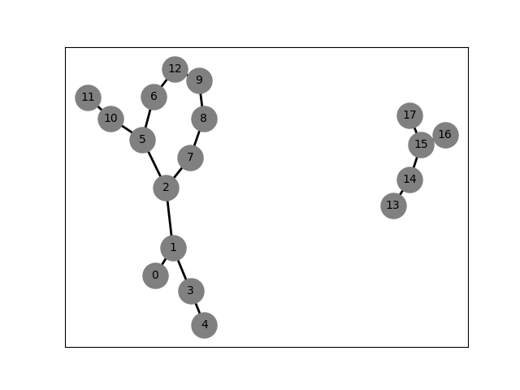
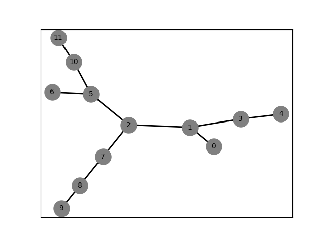
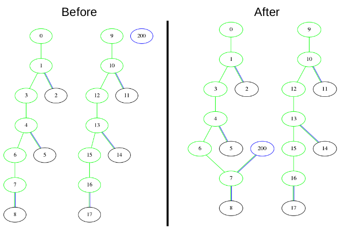
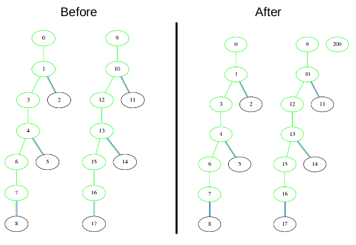
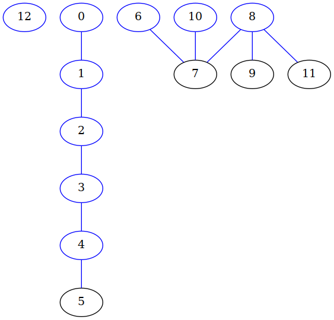
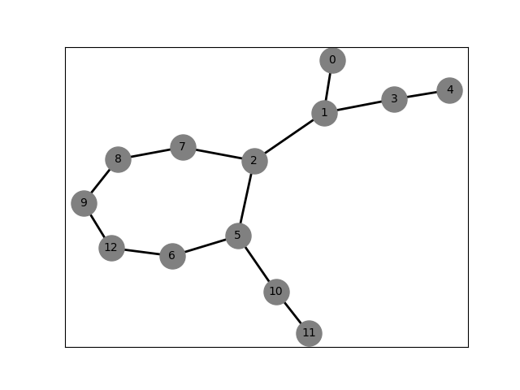
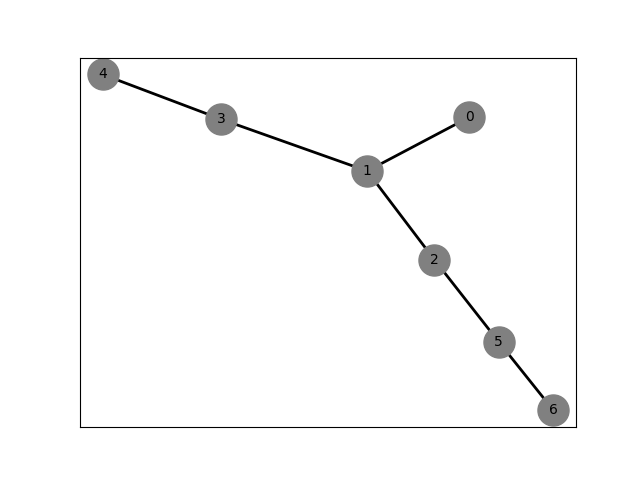
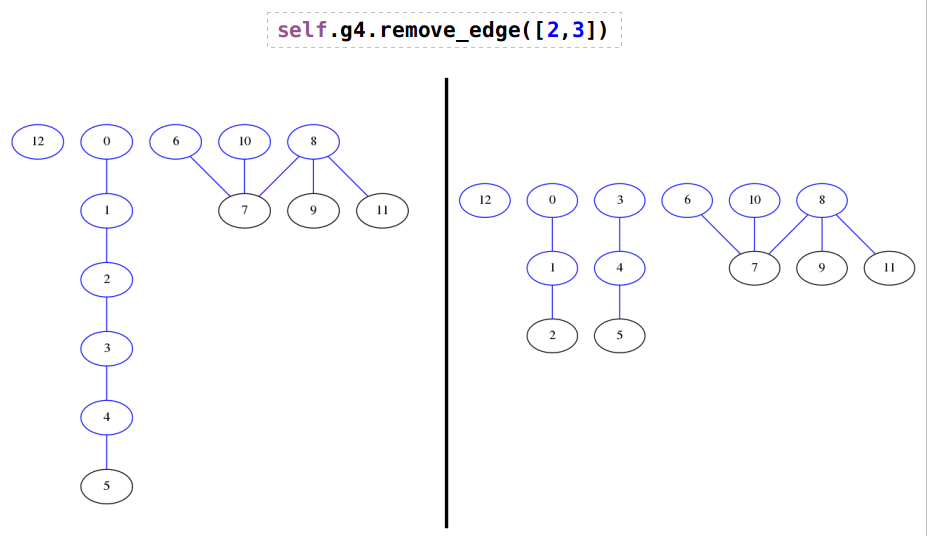

Module polyanagro.MolecularGraph
This module implements a class to handle molecule as graphs. This class should not be used by the users, instead of use Topology class
Expand source code
"""
This module implements a class to handle molecule as graphs. This class should not be used by the users, instead of
use Topology class
"""
import pygraphviz as pgv
import networkx as nx
import matplotlib.pyplot as plt
import sys
import copy
import polyanagro as pag
class MolecularGraph(object):
__slots__ = ['_graphdict', '_nmols', '_natoms', '_undirected', '_bonds', '_cycles']
# ##################################################################################################################
def __init__(self, nvert = -1, listbonds = None, undirected=True):
"""
`MolecularGraph` implements objects that describe the connectivity of the atoms in a molecule or polymer chain.
Each atom is a vertex and the edges of the graph represents a bond. The vertice numbering starts at zero
Parameters:
* ``nvert`` (int, default = -1): Number of nodes (atoms) of the graph.
* ``listbonds`` (list, default = None): A list containing the edges (bonds) of the graph. The None value is used for a graph without edges.
* ``undirected`` (boolean, default = True): False for directed graph or True for undirected graph. (see warning above)
Return:
* ``None``
Attributes:
* ``self._graphdict`` (dict)--> A dictionary with the following format. The key is the number of node\
and the values is a list with the neighbours to the node
* ``self._nmols`` (list of lists)--> The length of the list is the number of unconnected graphs.\
Each sublist contains the number of atoms of the molecule.
* ``self._bonds`` (list of tuples)--> A list of sets. Each set is a bond. Example:\
[{0,1},{1,2},{1,3}]
* ``self._cycles`` (list of lists)--> A list of list. Each list is a ring (or cycle).\
Example: [[5, 2, 7, 8, 9, 12, 6, 5]]
* ``self._undirected`` (bool)--> True for an undirected graph, otherwise False
* ``self._natoms`` (int)--> Number of atoms aka number of get_vertices (nodes)
Examples
--------
An empty graph:
>>> MolecularGraph()
A graph without get_edges, only nodes (10)
>>> MolecularGraph(nvert=10)
A graph with nodes and egdes
>>> MolecularGraph(nvert=2, listbonds=[[0,1], [1,2]])
A system with two molecules, with 13 and 5 atoms, respectively. The molecule #1 contains a cycle
.. image:: ../../figures/graph07_nx.png
Data::
self._graphdict = {0: [1], 1: [0, 2, 3], 2: [1, 5, 7], 3: [1, 4], 4: [3],
5: [2, 6, 10], 6: [5, 12], 7: [2, 8], 8: [7, 9], 9: [8, 12], 10: [5, 11], 11: [10],
12: [9, 6], 13: [14], 14: [13, 15], 15: [14, 17, 16], 16: [15], 17: [15]}
self._bonds = [{0, 1}, {1, 2}, {1, 3}, {2, 5}, {3, 4}, {5, 6}, {10, 5}, {2, 7},
{8, 7}, {8, 9}, {10, 11}, {9, 12}, {12, 6},
{13, 14}, {14, 15}, {17, 15}, {16, 15}]
self._natoms = 18
self._undirected = True
self._cycles = [[5, 2, 7, 8, 9, 12, 6, 5]]
self._nmols = [[0, 1, 2, 3, 4, 5, 6, 7, 8, 9, 10, 11, 12],
[13, 14, 15, 16, 17]]
Notes
-----
Difference between undirected (undirected = True) and directed (undirected = False)
.. image:: ../../figures/g2dvsg2u.png
Data ::
TEST 05 Undirected: {0: [1], 1: [0, 2, 3], 2: [1, 5, 7], 3: [1, 4], 4: [3], 5: [2, 6, 10], 6: [5], 7: [2, 8], 8: [7, 9], 9: [8], 10: [5, 11], 11: [10]}
TEST 05 Directed: {0: [1], 1: [2, 3], 2: [5, 7], 3: [4], 4: [], 5: [6], 6: [], 7: [], 8: [7, 9], 9: [], 10: [5, 11], 11: []}
.. warning:: Directed graphs should not work properly. The most methods work well with undirected graphs
"""
self._graphdict = {}
self._nmols = []
self._bonds = []
self._cycles = []
self._undirected = undirected
self._natoms = 0
if nvert != -1:
for i in range(0,nvert):
self.add_vertex(i)
if listbonds is not None:
for ibond in listbonds:
self.add_edge(ibond)
self._set_forest()
# ##################################################################################################################
def __str__(self):
""" Returns the state of the attributtes of an instance"""
objstr = str(self.__repr__())+"\n"
for key in self.__slots__:
try:
value = getattr(self,key)
objstr += str(key) +": "+str(value) + "\n"
except AttributeError:
objstr += str(key) +": NOT SET" + "\n"
objstr += "\nget_vertices: "
for k in self._graphdict:
objstr += str(k) + " "
objstr += "\nget_edges: "
for edge in self._generate_edges():
objstr += str(edge) + " "
return objstr
# ##################################################################################################################
def __sizeof__(self):
"""
This method returns the number of bytes of the actual instance.
:return: Number of bytes
"""
nbytes = 0
nbytes += pag.total_size(self._graphdict)
nbytes += pag.total_size(self._nmols)
nbytes += pag.total_size(self._natoms)
return nbytes
# ##################################################################################################################
def get_vertices(self):
"""
Returns a list of all vertices in the graph
Parameters
----------
None
Return
------
A list of vertices
Example:
-------
>>> v = self.g11.get_vertices()
... [0, 1, 2, 3, 4, 5, 6]
"""
return list(self._graphdict.keys())
# ##################################################################################################################
def get_edges(self):
"""
It returns a list of all edges in the graph
Parameters
----------
None
Return
------
A list containing all edges
Example
-------
All edges in the system. The order is [min, max]
.. image:: ../../figures/graph11_nx.png
>>> e = self.g11.get_edges()
... el = [{0, 1}, {1, 2}, {1, 3}, {2, 5}, {3, 4}, {5, 6}]
... self.assertEqual(e, el)
"""
return self._generate_edges()
# # ##################################################################################################################
def add_vertex(self, vertex):
"""
This function add a vertex to the molecular graph. The new vertex is not bonded to any other in the graph.
If the vertex exists in the `self._graphdict` attribute nothing has to be done.
Parameters
----------
vertex : int
Index of the vertex.
Return
------
None
Example
-------
Add a vertex to a graph
>>> g.add_vertex(200)
.. image:: ../../figures/then_and_now.png
"""
if vertex not in self._graphdict.keys():
self._graphdict[vertex] = []
self._natoms +=1
# ##################################################################################################################
def add_edge(self, edge, setforest=True):
"""
It creates a new edge in the graph between two existing nodes.
The type of parameter **edge** can be a set, a tuple or a list of two nodes;
Multiple edges can exist between two vertices
Both vertex must exist in the molecular graph. If any vertex is not in the
molecular graph nothing is done.
.. image:: ../../figures/then_and_now_edges.png
Parameters
----------
edge : set, tuple or list
The vertice numbers to create an edge (aka bond)
setforest : boolean, default=True
If True the `_set_forest` method is called.
This is useful when multiple edges are added to a graph,
in this case only in the last addition the parameter `setforest` should be true in order to
update the `self._nmols` attribute (see the example)
Return
------
None
Example
-------
Adding an edge between the vertex 12 and 13 in a molecular graph called `a`
>>> g.add_edge([12,13])
Adding multiple edges
>>> g.add_edge((1,7), setforest=False)
... g.add_edge((2, 8), setforest=False)
... g.add_edge((9, 8), setforest=True)
"""
edge = set(edge)
(vertex1, vertex2) = tuple(edge)
if (vertex1 and vertex2) in self._graphdict:
if vertex2 not in self._graphdict[vertex1]:
self._graphdict[vertex1].append(vertex2)
self._bonds.append({vertex1, vertex2})
if self._undirected:
if vertex1 not in self._graphdict[vertex2]:
self._graphdict[vertex2].append(vertex1)
if setforest:
self._set_forest()
# ##################################################################################################################
def remove_edge(self, edge):
"""
It deletes an edge in the graph between two existing nodes.
The parameter **edge** can be a set, a tuple or a list of two nodes;
Between two vertices can be multiple edges.
Both vertex must exist in the molecular graph. If any vertex is not in the
molecular graph nothing is done
Parameters
----------
edge: Set, tuple or list
Vertices to create an edges (aka bond)
Return
------
None
Examples
--------
>>>g4.remove_edge([2,3])
.. image:: ../../figures/then_and_now_removeedges.png
"""
edge = set(edge)
(vertex1, vertex2) = tuple(edge)
if (vertex1 and vertex2) in self._graphdict:
self._bonds.remove({vertex2, vertex1})
self._graphdict[vertex2].remove(vertex1)
if self._undirected: self._graphdict[vertex1].remove(vertex2)
self._set_forest()
# ##################################################################################################################
def _generate_edges(self):
"""
A method generating the edges of the
graph "graph". Edges are represented as sets
with one (a loop back to the vertex) or two
get_vertices.
Parameters
----------
None
Return
------
A list of edges
Example: [{0, 1}, {1, 2}, {2, 3}, {3, 4}, {4, 5}, {6, 7}, {8, 7}, {10, 7}, {8, 9}, {8, 11}]
"""
edges = []
for vertex in self._graphdict:
for neighbour in self._graphdict[vertex]:
if {neighbour, vertex} not in edges:
edges.append({vertex, neighbour})
return edges
# ##################################################################################################################
def find_all_paths(self, start_vertex, end_vertex, path=[]):
"""
It finds all paths from start_vertex to
end_vertex in graph, This is a recursive function.
Parameters
----------
start_vertex : integer
Starting vertex of the path
end_vertex :integer
Finish vertex of the path
path : list of lists
Paths between start_vertex and end_vertex
Return
------
Return a list of paths. If there is not path between start_vertex and end_vertex returns an empty list. The
starting and ending node are included in the path
Example
-------
Find all paths between the node 2 and 12 of the following graph:
.. image:: ../../figures/g3_03_nx.png
>>> path = self.g3.find_all_paths(2,12)
... [[2, 5, 6, 12], [2, 7, 8, 9, 12]]
.. warning:: This is a recursive function
"""
graph = self._graphdict
path = path + [start_vertex]
if start_vertex == end_vertex:
return [path]
if start_vertex not in graph:
return []
paths = []
for vertex in graph[start_vertex]:
if vertex not in path:
extended_paths = self.find_all_paths(vertex, end_vertex, path)
for p in extended_paths:
paths.append(p)
return paths
# ##################################################################################################################
def find_all_paths_length(self, start_vertex, length, path=[]):
"""
It finds all paths of length ``length`` in graph from start_vertex. This is a recursive function
Parameters
----------
start_vertex : integer
Starting vertex of the path
length : integer
Length of the paths to find. This is defined as the number of edges between the start_vertex and the end_vertex
path : list
Path between start_vertex and end_vertex
Return
------
Return a list of paths of length ``length``**. If length is greater than the max. length in the graph returns
an empty list. If length is zero returns a list only containing the start_vertex node.
If there is not path between start_vertex and end_vertex returns an empty list. The
starting node is included in the path
Example
-------
Find all paths between the starting in the node 2 with length 4 of the following graph:
.. image:: ../../figures/g3_03_nx.png
.. warning:: This is a recursive function
"""
l = length
graph = self._graphdict
path = path + [start_vertex]
if l == 0:
return [path]
if start_vertex not in graph:
return []
paths = []
for vertex in graph[start_vertex]:
if vertex not in path:
extended_paths = self.find_all_paths_length(vertex, l-1, path)
for p in extended_paths:
paths.append(p)
return paths
# ##################################################################################################################
def find_isolated_vertices(self):
"""
It returns a list of isolated vertices. A isolated vertex is defined as a vertex without edges
Parameters
----------
None
Return
------
Return a list of isolated nodes
Example
-------
.. image:: ../../figures/graph04.png
>>> self.g4.find_isolated_vertices()
... [12]
"""
graph = self._graphdict
isolated = []
for vertex in graph:
# print(isolated, vertex)
if not graph[vertex]:
isolated += [vertex]
if not self._undirected:
l_edges = self.get_edges()
for iedge in l_edges:
for i in iedge:
if i in isolated:
isolated.remove(i)
return isolated
# ##################################################################################################################
def is_connected(self, vertices_encountered = set(), start_vertex=None):
"""
Determines if the graph is connected. This is a recursive function
Parameters
----------
vertices_encountered: set
Returns a set of vertices connected
start_vertex integer
Startting point
Return
------
Return a boolean. True if the graph is connected
.. warning:: This is a recursive function
Example
-------
>>> g1.is_connected()
"""
gdict = self._graphdict
vertices = list(gdict.keys())
if not start_vertex:
# choose a vertex from graph as a starting point
start_vertex = vertices[0]
vertices_encountered.add(start_vertex)
if len(vertices_encountered) != len(vertices):
for vertex in gdict[start_vertex]:
if vertex not in vertices_encountered:
if self.is_connected(vertices_encountered, vertex):
return True
else:
return True
return False
# ##################################################################################################################
def dfs_iterative(self, start=0):
"""
Depth-First Search. Iterative version (DFS: https://en.wikipedia.org/wiki/Depth-first_search)
Parameters
----------
start : integer
Node to start the search
Return
------
Return a list with the DFS path
Example
-------
DFS in a graph
>>> g.dfs_iterative(start=6)
.. image:: ../../figures/graph06_test12.png
Data::
[6, 7, 8, 9, 11, 10]
"""
g = self._graphdict
V = self.get_vertices()
visited = [False for i in range(len(V))]
# Create a stack for DFS
stack = list()
path = list()
s = start
# Push the current source node.
stack.append(s)
while len(stack):
# Pop a vertex from stack and print it
s = stack[-1]
stack.pop()
# Stack may contain same vertex twice. So
# we need to print the popped item only
# if it is not visited.
if not visited[s]:
path.append(s)
visited[s] = True
# Get all adjacent vertices of the popped vertex s
# If a adjacent has not been visited, then puah it
# to the stack.
for node in reversed(g[s]):
if not visited[node]:
stack.append(node)
return path
# ##################################################################################################################
def bfs_iterative(self, start=0):
"""
Breath-First Search. Iterative version (BFS: https://en.wikipedia.org/wiki/Breath-first_search)
Parameters
----------
start : integer
Node to start the search
Return
------
Return a list with the BFS path
Example
-------
BFS in a graph
>>> g.bfs_iterative(start=6)
.. image:: ../../figures/graph06_test12.png
Data::
[6, 7, 8, 10, 9, 11]
"""
visitedlist = []
queue = [start]
g_disorder = self._graphdict
g = {}
for i in g_disorder:
g[i] = sorted(g_disorder[i])
while queue:
vertex = queue.pop(0)
if vertex not in visitedlist:
visitedlist.append(vertex)
for inode in g[vertex]:
if visitedlist.count(inode) > 0:
continue
else:
queue.append(inode)
return visitedlist
# ##################################################################################################################
def get_forest(self):
"""
It returns a list of lists. Each sublist is a molecule (chain) of the system
Parameters
----------
None
Return
------
A list of lists: forest => [[ichain1], [ichain2], ...]
Examples
--------
.. image:: ../../figures/graph04.png
>>> l2 = self.g4.get_forest()
... lr = [[0, 1, 2, 3, 4, 5], [6, 7, 8, 9, 11, 10], [12]] #= self._nmols
"""
return self._nmols
# ###############################################################################################################
def _set_forest_recursive(self):
"""Method to generate connected components in
an undirected graph. This use dfs a recursive function. Use DFS recursive
Returns
List of list: A list with the connected components as a sublist of get_vertices
"""
# Get get_vertices
gdict = self._graphdict
vertices = list(gdict.keys())
nvertices = len(vertices)
# Initialize visited list
visited = []
cc = []
for i in range(nvertices):
visited.append(False)
for v in range(nvertices):
if not visited[v]:
temp = []
cc.append(self.dfs(temp, v, visited))
self._nmols = cc
# ###############################################################################################################
def _set_forest(self):
"""
Method to generate connected components in
an undirected graph. Use DFS iterative
Parameters
----------
None
Return
------
List of list: A list with the connected components as a sublist of get_vertices
Example
-------
"""
# Get get_vertices
gdict = self._graphdict
vertices = list(gdict.keys())
nvertices = len(vertices)
# Initialize visited list
visited = []
cc = []
for i in range(nvertices):
visited.append(False)
for v in range(nvertices):
if not visited[v]:
imol = self.dfs_iterative(start=v)
cc.append(imol)
for ivert in imol:
visited[ivert] = True
self._nmols = cc
return cc
# ##################################################################################################################
def get_graph(self):
"""
It returns the attribute self._graphdict
Parameters
----------
None
Return
------
It returns the attribute self._graphdict
Example
-------
.. image:: ../../figures/graph11_nx.png
>>> g11.get_graph()
... {0: [1], 1: [2, 3], 2: [5], 3: [4], 4: [], 5: [6], 6: []}
"""
return self._graphdict
##################################################################################################################
def draw_graph_pygraphviz(self, title='simple'):
"""
Create an image of the graph using pygraphviz library
Parameters
----------
title : string
The name of the file containing the image
Return
------
None
Example
-------
Draw the graph `g4` in a file named `graphs/graph04.png`
>>> g4.draw_graph_pygraphviz(title="graphs/graph04")
"""
A = pgv.AGraph()
# Isolated nodes
for i in self.get_vertices():
if len(self._graphdict[i]) == 0:
A.add_node(i,color='blue')
for ibond_old in self._bonds:
ibond_copy = copy.deepcopy(ibond_old)
i = ibond_copy.pop()
A.add_node(i,color='blue')
for ibond_old in self._bonds:
ibond_copy = copy.deepcopy(ibond_old)
i = ibond_copy.pop()
try:
j = ibond_copy.pop()
A.add_edge(i,j,color='blue')
except IndexError:
pass
filenamedot=title+'.dot'
filenamepng=title+'.png'
A.write(filenamedot) # write to simple.dot
A.draw(filenamepng,prog="dot")
##################################################################################################################
def draw_graph_networkx(self, title='simple'):
"""
Create an image of the graph using networkx library
Parameters
----------
title : string
The name of the file containing the image
Return
------
None
Example
-------
Draw the graph `g4` in a file named `graphs/graph04_f.png`
>>> g4.draw_graph_networkx(title="graphs/graph04")
"""
try:
import networkx as nx
import matplotlib.pyplot as plt
except:
pass
A = nx.Graph()
# Isolated nodes
for i in self.get_vertices():
if len(self._graphdict[i]) == 0:
A.add_node(i,color='blue')
for ibond_old in self._bonds:
ibond_copy = copy.deepcopy(ibond_old)
i = ibond_copy.pop()
A.add_node(i)
for ibond_old in self._bonds:
ibond_copy = copy.deepcopy(ibond_old)
i = ibond_copy.pop()
try:
j = ibond_copy.pop()
A.add_edge(i,j)
except IndexError:
pass
filenamepng=title+'.png'
pos=nx.spring_layout(A)
# nodes
nx.draw_networkx_nodes(A, pos,node_size=500, node_color="grey")
# edges
nx.draw_networkx_edges(A,pos, width=2, edge_color="black", style="solid")
# labels
nx.draw_networkx_labels(A,pos,font_size=10,font_family='sans-serif')
plt.savefig(filenamepng)
del A
plt.close()
#plt.show()
# ##################################################################################################################
def draw_graph_forest_pygraphviz(self, title = 'simple'):
"""
Create an image for each tree of the graph using pygraphviz library. It can be useful to create a file for each molecule
in the system.
Parameters
----------
title : string
The patter to be used in the name of the file containing the image
Return
------
None
Example
-------
Draw the each subgraph of the graph `g4` in a file with the pattern `graphs/graph04_f???.png`
>>> g4.draw_graph_forest_pygraphviz(title="graphs/graph04_f")
"""
for imol in range(len(self._nmols)):
A = pgv.AGraph()
for iatom in self._nmols[imol]:
A.add_node(iatom, color='blue')
for jatom in self._graphdict[iatom]:
A.add_edge(iatom, jatom, color='blue')
string = "%s%03d" % (title, imol)
filenamepng = string+".png"
A.write(string+'.dot') # write to simple.dot
A.draw(filenamepng, prog="neato")
# ##################################################################################################################
def draw_graph_forest_networkx(self, title = 'simple'):
"""
Create an image for each tree of the graph using networkx library. It can be useful to create a file for each molecule
in the system.
Parameters
----------
title : string
The patter to be used in the name of the file containing the image
Return
------
None
Example
-------
Draw the each subgraph of the graph `g4` in a file with the pattern `graphs/graph04_f???.png`
>>> g4.draw_graph_forest_networkx(title="graphs/graph04_f")
"""
for imol in range(len(self._nmols)):
A = nx.Graph()
for iatom in self._nmols[imol]:
A.add_node(iatom)
for jatom in self._graphdict[iatom]:
A.add_edge(iatom, jatom)
string = "%s%06d" % (title, imol)
filenamepng = string+".png"
#pos=nx.spring_layout(A, weight=None)
pos=nx.kamada_kawai_layout(A, weight=None)
# nodes
nx.draw_networkx_nodes(A, pos,node_size=500, node_color="grey")
# edges
nx.draw_networkx_edges(A,pos, width=2, edge_color="black", style="solid")
# labels
nx.draw_networkx_labels(A,pos,font_size=8,font_family='sans-serif')
plt.savefig(filenamepng)
del A
plt.close()
# ##################################################################################################################
def iscyclic(self):
"""
Returns a boolean list. Each item of the list corresponds to a graph (molecule)
Parameter
---------
None
Returns
------
A boolean list
Example
-------
.. image:: ../../figures/graph07_nx.png
>>> iscyclic2 = self.g7.iscyclic()
... self.assertEqual(iscyclic2, [True, False])
"""
ismol_cyclic = []
# Mark all the get_vertices as not visited
visited = {}
nverts = self._natoms
for i in range(nverts):
visited[i] = False
for ich in range(len(self._nmols)):
nvert_ich = self._nmols[ich]
# Call the recursive helper function to
# detect cycle in different DFS trees
cycle_is_found = False
for i in nvert_ich:
if not visited[i]: # Don't recur for u if it is already visited
if self._iscyclicutil(i, visited, -1):
cycle_is_found = True
if cycle_is_found:
ismol_cyclic.append(True)
else:
ismol_cyclic.append(False)
return ismol_cyclic
# ##################################################################################################################
def _iscyclicutil(self, v, visited, parent):
"""
A recursive function that uses visited[] and parent to detect
cycle in subgraph reachable from vertex v.
"""
# Mark the current node as visited
visited[v] = True
# Recur for all the get_vertices adjacent to this vertex
for i in self._graphdict[v]:
# If the node is not visited then recurse on it
if not visited[i]:
if self._iscyclicutil(i, visited, v):
return True
# If an adjacent vertex is visited and not parent of current vertex,
# then there is a cycle
elif parent != i:
return True
return False
# ##################################################################################################################
def get_allbonds(self):
"""
It returns all bonds in the graph.
Parameters
----------
None
Return
------
A list containing all bond angles
Example
-------
All bond angles in the system. The order is [min, max]
.. image:: ../../figures/graph07_nx.png
>>> bl1 = self.g7.get_allbonds()
... self.assertEqual(bl1,[[0, 1], [1, 2], [1, 3], [2, 5], [2, 7], [3, 4],
... [5, 6], [5, 10], [6, 12], [7, 8], [8, 9], [9, 12],
... [10, 11], [13, 14], [14, 15], [15, 17], [15, 16]])
"""
bl = []
# Append all bonds
for ivert in self.get_vertices():
p = self.find_all_paths_length(ivert, 1)
for item in p:
at1 = item[0]
at2 = item[1]
# Removing repeat bonds
if at1 > at2: continue
bl.append([at1, at2])
return bl
# ##################################################################################################################
def get_allbends(self):
"""
It returns all angle bends in the graph.
Parameters
----------
None
Return
------
A list containing all bend angles
Example
-------
All bend angles in the system
.. image:: ../../figures/graph07_nx.png
>>> al1 = self.g7.get_allbends()
... self.assertEqual(al1,[[0, 1, 2], [0, 1, 3], [1, 2, 5], [1, 2, 7],
... [1, 3, 4], [2, 1, 3], [2, 5, 6], [2, 5, 10],
... [2, 7, 8], [5, 2, 7], [5, 6, 12], [5, 10, 11],
... [6, 5, 10], [6, 12, 9], [7, 8, 9], [8, 9, 12],
... [13, 14, 15], [14, 15, 17], [14, 15, 16], [16, 15, 17]])
"""
al = []
# Append all bend angles
for ivert in self.get_vertices():
p = self.find_all_paths_length(ivert, 2)
for item in p:
at1 = item[0]
at2 = item[1]
at3 = item[2]
# Removing repeat bonds
if at1 > at3: continue
al.append([at1, at2, at3])
return al
# ##################################################################################################################
def get_alldihedrals(self):
"""
It returns all dihedral angles in the graph.
Parameters
----------
None
Return
------
A list containing all dihedral angles. In this implementation, the greater atom number is the first atom in the list
Example
-------
All dihedral angles in the system
.. image:: ../../figures/graph07_nx.png
>>> d1 = g7.get_alldihedrals()
... self.assertEqual(d1,[[5, 2, 1, 0], [7, 2, 1, 0], [4, 3, 1, 0], [6, 5, 2, 1],
... [10, 5, 2, 1], [8, 7, 2, 1], [4, 3, 1, 2], [12, 6, 5, 2],
... [11, 10, 5, 2], [9, 8, 7, 2], [5, 2, 1, 3], [7, 2, 1, 3],
... [8, 7, 2, 5], [9, 12, 6, 5], [7, 2, 5, 6], [11, 10, 5, 6],
... [8, 9, 12, 6], [10, 5, 2, 7], [12, 9, 8, 7], [12, 6, 5, 10],
... [17, 15, 14, 13], [16, 15, 14, 13]])
"""
dl = []
# Append all bend angles
for ivert in self.get_vertices():
p = self.find_all_paths_length(ivert, 3)
for item in p:
at1 = item[0]
at2 = item[1]
at3 = item[2]
at4 = item[3]
# Removing repeat bonds
if [at1, at2, at3, at4] in dl: continue
dl.append([at4, at3, at2, at1])
return dl
# ##################################################################################################################
def get_allimpropers(self, isbackbone_dict):
"""
It returns all improper angles in the graph.
Parameters
----------
isbackbone_dict: Dictionary
The key is the number of the atom and the value True (backbone atom) or False (not backbone atom)
Return
------
A list containing all improper angles. In this implementation, the greater atom number is the first atom in the list
Example
-------
All improper angles in the system
.. image:: ../../figures/graph07_nx.png
>>> isbackbone_dict = {}
... for i in range(0,self.g7._natoms):
... isbackbone_dict[i] = True
... isbackbone_dict[2] = False
... isbackbone_dict[5] = False
... isbackbone_dict[6] = False
... isbackbone_dict[7] = False
... isbackbone_dict[8] = False
... isbackbone_dict[9] = False
... isbackbone_dict[10] = False
... isbackbone_dict[11] = False
... isbackbone_dict[12] = False
... isbackbone_dict[16] = False
... d1 = self.g7.get_allimpropers(isbackbone_dict=isbackbone_dict)
... self.assertEqual(d1,[[1, 0, 3, 2], [2, 5, 7, 1], [15, 14, 17, 16]])
.. warning:: A criteria about the order of atoms need to be implemented and checked
"""
il = []
# Append all impropers -->
for ivert in self.get_vertices():
p = self.find_all_paths_length(ivert, 1)
if len(p) == 3:
iat1 = ivert
tmplist = []
for item in p:
tmplist.append(item[1])
tmplist.sort()
tmpdict = {0:iat1, 1:-1, 2:-1, 3:-1}
if isbackbone_dict[iat1]:
while tmplist:
a = tmplist.pop(0)
if isbackbone_dict[a]:
if tmpdict[1] == -1:
tmpdict[1] = a
else:
tmpdict[2] = a
else:
tmpdict[3] = a
else:
while tmplist:
a = tmplist.pop(0)
if not isbackbone_dict[a]:
if tmpdict[1] == -1:
tmpdict[1] = a
else:
tmpdict[2] = a
else:
tmpdict[3] = a
l1 = [tmpdict[0],tmpdict[1],tmpdict[2],tmpdict[3] ]
if l1.count(-1) == 0: il.append(l1)
elif len(p) == 4:
iat1 = ivert
tmplist = []
for item in p:
tmplist.append(item[1])
tmplist.sort()
tmpdict1 = {0:iat1, 1:-1, 2:-1, 3:-1}
tmpdict2 = {0:iat1, 1:-1, 2:-1, 3:-1}
if isbackbone_dict[iat1]:
while tmplist:
a = tmplist.pop(0)
if isbackbone_dict[a]:
if tmpdict1[1] == -1:
tmpdict1[1] = a
else:
tmpdict1[2] = a
if tmpdict2[1] == -1:
tmpdict2[1] = a
else:
tmpdict2[2] = a
else:
if tmpdict1[3] == -1:
tmpdict1[3] = a
else:
tmpdict2[3] = a
else:
print ("ERROR. Improper angles cannot be found in complex branches")
sys.exit()
l1 = [tmpdict1[0],tmpdict1[1],tmpdict1[2],tmpdict1[3] ]
if l1.count(-1) == 0: il.append(l1)
l2 = [tmpdict2[0],tmpdict2[1],tmpdict2[2],tmpdict2[3] ]
if l2.count(-1) == 0: il.append(l2)
# Aromatic --> Planarity must be get in the force field class (i.e see: trappeUA_ff.py)
return il
# ##################################################################################################################
def get_neighbours(self, inode):
"""
This method returns all neighbours
Parameters
----------
inode :: integer
Number of the parent node
Return
------
It returns a list with all neighbors to the inode.
Examples
--------
.. image:: ../../figures/g3_03_nx.png
>>> ln = self.g3.get_neighbours(2)
... self.assertEqual(ln, [1, 5, 7])
"""
li = self.find_all_paths_length(inode, 1)
ln = []
for item in li:
if item[0] == inode:
ln.append(item[1])
else:
ln.append(item[0])
l = len(li)
return ln
# ##################################################################################################################
def perception_rings(self):
"""
"A New Algorithm for Exhaustive Ring Perception in a Molecular Graph"
Th. Hanser, Ph. Jauffret, and G. Kaufmann
J. Chem. Inf. Comput. Sci. 1996, 36, 1146-1152
https://doi.org/10.1021/ci960322f
Abstract:
A new fast and easy to implement algorithm for exhaustive ring perception is presented. This algorithm is
based upon a progressive reduction (collapsing) of the path graph associated with the molecular graph studied.
The path graph is an image of the molecular graph in which each vertex corresponds to a vertex of the
molecular graph and each edge a-b describes an existing path between a and b in the molecular graph.
During the reduction, nodes of the path graph are removed, and the information related to cycle occurrence
is concentrated in the label of new get_edges between the remaining get_vertices. Each loop formed in the path
graph during this collapsing process corresponds to a cycle in the molecular graph. Once the path graph
has totally collapsed, all the rings in the molecular graph have been perceived.
Returns
"""
# ####################################
def convert_perception_rings(vertex= {}):
# Copy the nodes from m-graph to p-graph
for v in self._graphdict.keys():
vertex[v] = []
# Copy the get_edges from m-graph to p-graph
for v in self._graphdict.keys():
for n in self._graphdict[v]:
if not [v,n] in vertex[v] and not [n,v] in vertex[v]:
vertex[v].append([v,n])
# ####################################
def ordernodesbyconnections_perception_rings(vertex_dict):
""" Takes the dictionary of nodes in pgraph and it returns
a list [ (number_node, connectivity)]. The last element of the
list is the node with a small value for connectivity. This can be extracted
with list.pop()
Parameters
----------
pgraph
Returns
-------
"""
ordered_nodes_by_connection = dict()
for key in vertex_dict:
ordered_nodes_by_connection[key] = len(vertex_dict[key])
nodes_ordered = sorted(ordered_nodes_by_connection.items(), key=lambda kv: kv[1])
nodes_ordered.reverse()
# print(ordered_nodes_by_connection)
# print(ordered_nodes_by_connection.items())
# print(sorted(ordered_nodes_by_connection.items()))
# print(nodes_ordered)
#
# sys.exit()
return nodes_ordered
# ####################################
def get_pairs_perception_rings(v, v_edges):
"""Get all pairs for the node v
"""
pairs = []
for item in v_edges[v]:
pairs.append(item)
return pairs
# ####################################
def intersection_perception_rings(l1, l2):
x = set(l1).intersection(l2)
return x
# ####################################
def remove_perception_rings(v, vertex_dict):
cycles = []
p = get_pairs_perception_rings(v, vertex_dict)
for i in range(len(p)):
# It is already a cycle
if p[i][0] == p[i][-1]: continue
for j in range(i+1, len(p)):
# pxy x pxz = {x}
if p[j][0] == p[j][-1]: continue
#if v in intersection_perception_rings(p[i], p[j]):
set_int = intersection_perception_rings(p[i], p[j])
if ({v} == set_int) or \
({p[i][0], p[i][-1]} == {p[j][0], p[j][-1]} and len(set_int) == 2 ):
# Temporal variable for the nodes to be deleted
tmp_p_i = copy.deepcopy(p[i])
tmp_p_j = copy.deepcopy(p[j])
# Concatenate the paths --> pyz <-- pxy + pxz
if tmp_p_i[-1] != v: tmp_p_i.reverse()
if tmp_p_j[0] != v: tmp_p_j.reverse()
tmp_p_i.extend(tmp_p_j[1:])
# Update the vertex_dict (p-graph)
s_node_in_path = tmp_p_i[0]
e_node_in_path = tmp_p_i[-1]
# Update the new path for each vertex
vertex_dict[s_node_in_path].append(tmp_p_i)
if s_node_in_path != e_node_in_path:
vertex_dict[e_node_in_path].append(tmp_p_i)
for pxy in p:
fe = pxy[0]
le = pxy[-1]
if fe == le:
cycles.append(pxy)
if fe != v:
try:
vertex_dict[fe].remove(pxy)
except ValueError:
pxy.reverse()
vertex_dict[fe].remove(pxy)
elif le != v:
try:
vertex_dict[le].remove(pxy)
except ValueError:
pxy.reverse()
vertex_dict[le].remove(pxy)
del(vertex_dict[v])
return cycles
# ========== Main perception_rings Loop ================
# Start a new graph: The P-Graph
vertex_edges = {}
convert_perception_rings(vertex=vertex_edges)
# Sort nodes by connectivity
l_nodes = ordernodesbyconnections_perception_rings(vertex_edges)
# Proccess all nodes in order of connectivity
while l_nodes:
inode = l_nodes.pop()[0]
c = remove_perception_rings(inode, vertex_edges)
if len(c) != 0:
self._cycles.extend(c)
passClasses
class MolecularGraph (nvert=-1, listbonds=None, undirected=True)-
MolecularGraphimplements objects that describe the connectivity of the atoms in a molecule or polymer chain. Each atom is a vertex and the edges of the graph represents a bond. The vertice numbering starts at zeroParameters
nvert(int, default = -1): Number of nodes (atoms) of the graph.listbonds(list, default = None): A list containing the edges (bonds) of the graph. The None value is used for a graph without edges.undirected(boolean, default = True): False for directed graph or True for undirected graph. (see warning above)
Return
None
Attributes
self._graphdict(dict)–> A dictionary with the following format. The key is the number of node and the values is a list with the neighbours to the nodeself._nmols(list of lists)–> The length of the list is the number of unconnected graphs. Each sublist contains the number of atoms of the molecule.self._bonds(list of tuples)–> A list of sets. Each set is a bond. Example: [{0,1},{1,2},{1,3}]self._cycles(list of lists)–> A list of list. Each list is a ring (or cycle). Example: [[5, 2, 7, 8, 9, 12, 6, 5]]self._undirected(bool)–> True for an undirected graph, otherwise Falseself._natoms(int)–> Number of atoms aka number of get_vertices (nodes) Examples
An empty graph:
>>> MolecularGraph()A graph without get_edges, only nodes (10)
>>> MolecularGraph(nvert=10)A graph with nodes and egdes
>>> MolecularGraph(nvert=2, listbonds=[[0,1], [1,2]])A system with two molecules, with 13 and 5 atoms, respectively. The molecule #1 contains a cycle

Data::
self._graphdict = {0: [1], 1: [0, 2, 3], 2: [1, 5, 7], 3: [1, 4], 4: [3], 5: [2, 6, 10], 6: [5, 12], 7: [2, 8], 8: [7, 9], 9: [8, 12], 10: [5, 11], 11: [10], 12: [9, 6], 13: [14], 14: [13, 15], 15: [14, 17, 16], 16: [15], 17: [15]} self._bonds = [{0, 1}, {1, 2}, {1, 3}, {2, 5}, {3, 4}, {5, 6}, {10, 5}, {2, 7}, {8, 7}, {8, 9}, {10, 11}, {9, 12}, {12, 6}, {13, 14}, {14, 15}, {17, 15}, {16, 15}] self._natoms = 18 self._undirected = True self._cycles = [[5, 2, 7, 8, 9, 12, 6, 5]] self._nmols = [[0, 1, 2, 3, 4, 5, 6, 7, 8, 9, 10, 11, 12], [13, 14, 15, 16, 17]]Notes
Difference between undirected (undirected = True) and directed (undirected = False)

Data ::
TEST 05 Undirected: {0: [1], 1: [0, 2, 3], 2: [1, 5, 7], 3: [1, 4], 4: [3], 5: [2, 6, 10], 6: [5], 7: [2, 8], 8: [7, 9], 9: [8], 10: [5, 11], 11: [10]} TEST 05 Directed: {0: [1], 1: [2, 3], 2: [5, 7], 3: [4], 4: [], 5: [6], 6: [], 7: [], 8: [7, 9], 9: [], 10: [5, 11], 11: []}Warning: Directed graphs should not work properly. The most methods work well with undirected graphs
Expand source code
class MolecularGraph(object): __slots__ = ['_graphdict', '_nmols', '_natoms', '_undirected', '_bonds', '_cycles'] # ################################################################################################################## def __init__(self, nvert = -1, listbonds = None, undirected=True): """ `MolecularGraph` implements objects that describe the connectivity of the atoms in a molecule or polymer chain. Each atom is a vertex and the edges of the graph represents a bond. The vertice numbering starts at zero Parameters: * ``nvert`` (int, default = -1): Number of nodes (atoms) of the graph. * ``listbonds`` (list, default = None): A list containing the edges (bonds) of the graph. The None value is used for a graph without edges. * ``undirected`` (boolean, default = True): False for directed graph or True for undirected graph. (see warning above) Return: * ``None`` Attributes: * ``self._graphdict`` (dict)--> A dictionary with the following format. The key is the number of node\ and the values is a list with the neighbours to the node * ``self._nmols`` (list of lists)--> The length of the list is the number of unconnected graphs.\ Each sublist contains the number of atoms of the molecule. * ``self._bonds`` (list of tuples)--> A list of sets. Each set is a bond. Example:\ [{0,1},{1,2},{1,3}] * ``self._cycles`` (list of lists)--> A list of list. Each list is a ring (or cycle).\ Example: [[5, 2, 7, 8, 9, 12, 6, 5]] * ``self._undirected`` (bool)--> True for an undirected graph, otherwise False * ``self._natoms`` (int)--> Number of atoms aka number of get_vertices (nodes) Examples -------- An empty graph: >>> MolecularGraph() A graph without get_edges, only nodes (10) >>> MolecularGraph(nvert=10) A graph with nodes and egdes >>> MolecularGraph(nvert=2, listbonds=[[0,1], [1,2]]) A system with two molecules, with 13 and 5 atoms, respectively. The molecule #1 contains a cycle .. image:: ../../figures/graph07_nx.png Data:: self._graphdict = {0: [1], 1: [0, 2, 3], 2: [1, 5, 7], 3: [1, 4], 4: [3], 5: [2, 6, 10], 6: [5, 12], 7: [2, 8], 8: [7, 9], 9: [8, 12], 10: [5, 11], 11: [10], 12: [9, 6], 13: [14], 14: [13, 15], 15: [14, 17, 16], 16: [15], 17: [15]} self._bonds = [{0, 1}, {1, 2}, {1, 3}, {2, 5}, {3, 4}, {5, 6}, {10, 5}, {2, 7}, {8, 7}, {8, 9}, {10, 11}, {9, 12}, {12, 6}, {13, 14}, {14, 15}, {17, 15}, {16, 15}] self._natoms = 18 self._undirected = True self._cycles = [[5, 2, 7, 8, 9, 12, 6, 5]] self._nmols = [[0, 1, 2, 3, 4, 5, 6, 7, 8, 9, 10, 11, 12], [13, 14, 15, 16, 17]] Notes ----- Difference between undirected (undirected = True) and directed (undirected = False) .. image:: ../../figures/g2dvsg2u.png Data :: TEST 05 Undirected: {0: [1], 1: [0, 2, 3], 2: [1, 5, 7], 3: [1, 4], 4: [3], 5: [2, 6, 10], 6: [5], 7: [2, 8], 8: [7, 9], 9: [8], 10: [5, 11], 11: [10]} TEST 05 Directed: {0: [1], 1: [2, 3], 2: [5, 7], 3: [4], 4: [], 5: [6], 6: [], 7: [], 8: [7, 9], 9: [], 10: [5, 11], 11: []} .. warning:: Directed graphs should not work properly. The most methods work well with undirected graphs """ self._graphdict = {} self._nmols = [] self._bonds = [] self._cycles = [] self._undirected = undirected self._natoms = 0 if nvert != -1: for i in range(0,nvert): self.add_vertex(i) if listbonds is not None: for ibond in listbonds: self.add_edge(ibond) self._set_forest() # ################################################################################################################## def __str__(self): """ Returns the state of the attributtes of an instance""" objstr = str(self.__repr__())+"\n" for key in self.__slots__: try: value = getattr(self,key) objstr += str(key) +": "+str(value) + "\n" except AttributeError: objstr += str(key) +": NOT SET" + "\n" objstr += "\nget_vertices: " for k in self._graphdict: objstr += str(k) + " " objstr += "\nget_edges: " for edge in self._generate_edges(): objstr += str(edge) + " " return objstr # ################################################################################################################## def __sizeof__(self): """ This method returns the number of bytes of the actual instance. :return: Number of bytes """ nbytes = 0 nbytes += pag.total_size(self._graphdict) nbytes += pag.total_size(self._nmols) nbytes += pag.total_size(self._natoms) return nbytes # ################################################################################################################## def get_vertices(self): """ Returns a list of all vertices in the graph Parameters ---------- None Return ------ A list of vertices Example: ------- >>> v = self.g11.get_vertices() ... [0, 1, 2, 3, 4, 5, 6] """ return list(self._graphdict.keys()) # ################################################################################################################## def get_edges(self): """ It returns a list of all edges in the graph Parameters ---------- None Return ------ A list containing all edges Example ------- All edges in the system. The order is [min, max] .. image:: ../../figures/graph11_nx.png >>> e = self.g11.get_edges() ... el = [{0, 1}, {1, 2}, {1, 3}, {2, 5}, {3, 4}, {5, 6}] ... self.assertEqual(e, el) """ return self._generate_edges() # # ################################################################################################################## def add_vertex(self, vertex): """ This function add a vertex to the molecular graph. The new vertex is not bonded to any other in the graph. If the vertex exists in the `self._graphdict` attribute nothing has to be done. Parameters ---------- vertex : int Index of the vertex. Return ------ None Example ------- Add a vertex to a graph >>> g.add_vertex(200) .. image:: ../../figures/then_and_now.png """ if vertex not in self._graphdict.keys(): self._graphdict[vertex] = [] self._natoms +=1 # ################################################################################################################## def add_edge(self, edge, setforest=True): """ It creates a new edge in the graph between two existing nodes. The type of parameter **edge** can be a set, a tuple or a list of two nodes; Multiple edges can exist between two vertices Both vertex must exist in the molecular graph. If any vertex is not in the molecular graph nothing is done. .. image:: ../../figures/then_and_now_edges.png Parameters ---------- edge : set, tuple or list The vertice numbers to create an edge (aka bond) setforest : boolean, default=True If True the `_set_forest` method is called. This is useful when multiple edges are added to a graph, in this case only in the last addition the parameter `setforest` should be true in order to update the `self._nmols` attribute (see the example) Return ------ None Example ------- Adding an edge between the vertex 12 and 13 in a molecular graph called `a` >>> g.add_edge([12,13]) Adding multiple edges >>> g.add_edge((1,7), setforest=False) ... g.add_edge((2, 8), setforest=False) ... g.add_edge((9, 8), setforest=True) """ edge = set(edge) (vertex1, vertex2) = tuple(edge) if (vertex1 and vertex2) in self._graphdict: if vertex2 not in self._graphdict[vertex1]: self._graphdict[vertex1].append(vertex2) self._bonds.append({vertex1, vertex2}) if self._undirected: if vertex1 not in self._graphdict[vertex2]: self._graphdict[vertex2].append(vertex1) if setforest: self._set_forest() # ################################################################################################################## def remove_edge(self, edge): """ It deletes an edge in the graph between two existing nodes. The parameter **edge** can be a set, a tuple or a list of two nodes; Between two vertices can be multiple edges. Both vertex must exist in the molecular graph. If any vertex is not in the molecular graph nothing is done Parameters ---------- edge: Set, tuple or list Vertices to create an edges (aka bond) Return ------ None Examples -------- >>>g4.remove_edge([2,3]) .. image:: ../../figures/then_and_now_removeedges.png """ edge = set(edge) (vertex1, vertex2) = tuple(edge) if (vertex1 and vertex2) in self._graphdict: self._bonds.remove({vertex2, vertex1}) self._graphdict[vertex2].remove(vertex1) if self._undirected: self._graphdict[vertex1].remove(vertex2) self._set_forest() # ################################################################################################################## def _generate_edges(self): """ A method generating the edges of the graph "graph". Edges are represented as sets with one (a loop back to the vertex) or two get_vertices. Parameters ---------- None Return ------ A list of edges Example: [{0, 1}, {1, 2}, {2, 3}, {3, 4}, {4, 5}, {6, 7}, {8, 7}, {10, 7}, {8, 9}, {8, 11}] """ edges = [] for vertex in self._graphdict: for neighbour in self._graphdict[vertex]: if {neighbour, vertex} not in edges: edges.append({vertex, neighbour}) return edges # ################################################################################################################## def find_all_paths(self, start_vertex, end_vertex, path=[]): """ It finds all paths from start_vertex to end_vertex in graph, This is a recursive function. Parameters ---------- start_vertex : integer Starting vertex of the path end_vertex :integer Finish vertex of the path path : list of lists Paths between start_vertex and end_vertex Return ------ Return a list of paths. If there is not path between start_vertex and end_vertex returns an empty list. The starting and ending node are included in the path Example ------- Find all paths between the node 2 and 12 of the following graph: .. image:: ../../figures/g3_03_nx.png >>> path = self.g3.find_all_paths(2,12) ... [[2, 5, 6, 12], [2, 7, 8, 9, 12]] .. warning:: This is a recursive function """ graph = self._graphdict path = path + [start_vertex] if start_vertex == end_vertex: return [path] if start_vertex not in graph: return [] paths = [] for vertex in graph[start_vertex]: if vertex not in path: extended_paths = self.find_all_paths(vertex, end_vertex, path) for p in extended_paths: paths.append(p) return paths # ################################################################################################################## def find_all_paths_length(self, start_vertex, length, path=[]): """ It finds all paths of length ``length`` in graph from start_vertex. This is a recursive function Parameters ---------- start_vertex : integer Starting vertex of the path length : integer Length of the paths to find. This is defined as the number of edges between the start_vertex and the end_vertex path : list Path between start_vertex and end_vertex Return ------ Return a list of paths of length ``length``**. If length is greater than the max. length in the graph returns an empty list. If length is zero returns a list only containing the start_vertex node. If there is not path between start_vertex and end_vertex returns an empty list. The starting node is included in the path Example ------- Find all paths between the starting in the node 2 with length 4 of the following graph: .. image:: ../../figures/g3_03_nx.png .. warning:: This is a recursive function """ l = length graph = self._graphdict path = path + [start_vertex] if l == 0: return [path] if start_vertex not in graph: return [] paths = [] for vertex in graph[start_vertex]: if vertex not in path: extended_paths = self.find_all_paths_length(vertex, l-1, path) for p in extended_paths: paths.append(p) return paths # ################################################################################################################## def find_isolated_vertices(self): """ It returns a list of isolated vertices. A isolated vertex is defined as a vertex without edges Parameters ---------- None Return ------ Return a list of isolated nodes Example ------- .. image:: ../../figures/graph04.png >>> self.g4.find_isolated_vertices() ... [12] """ graph = self._graphdict isolated = [] for vertex in graph: # print(isolated, vertex) if not graph[vertex]: isolated += [vertex] if not self._undirected: l_edges = self.get_edges() for iedge in l_edges: for i in iedge: if i in isolated: isolated.remove(i) return isolated # ################################################################################################################## def is_connected(self, vertices_encountered = set(), start_vertex=None): """ Determines if the graph is connected. This is a recursive function Parameters ---------- vertices_encountered: set Returns a set of vertices connected start_vertex integer Startting point Return ------ Return a boolean. True if the graph is connected .. warning:: This is a recursive function Example ------- >>> g1.is_connected() """ gdict = self._graphdict vertices = list(gdict.keys()) if not start_vertex: # choose a vertex from graph as a starting point start_vertex = vertices[0] vertices_encountered.add(start_vertex) if len(vertices_encountered) != len(vertices): for vertex in gdict[start_vertex]: if vertex not in vertices_encountered: if self.is_connected(vertices_encountered, vertex): return True else: return True return False # ################################################################################################################## def dfs_iterative(self, start=0): """ Depth-First Search. Iterative version (DFS: https://en.wikipedia.org/wiki/Depth-first_search) Parameters ---------- start : integer Node to start the search Return ------ Return a list with the DFS path Example ------- DFS in a graph >>> g.dfs_iterative(start=6) .. image:: ../../figures/graph06_test12.png Data:: [6, 7, 8, 9, 11, 10] """ g = self._graphdict V = self.get_vertices() visited = [False for i in range(len(V))] # Create a stack for DFS stack = list() path = list() s = start # Push the current source node. stack.append(s) while len(stack): # Pop a vertex from stack and print it s = stack[-1] stack.pop() # Stack may contain same vertex twice. So # we need to print the popped item only # if it is not visited. if not visited[s]: path.append(s) visited[s] = True # Get all adjacent vertices of the popped vertex s # If a adjacent has not been visited, then puah it # to the stack. for node in reversed(g[s]): if not visited[node]: stack.append(node) return path # ################################################################################################################## def bfs_iterative(self, start=0): """ Breath-First Search. Iterative version (BFS: https://en.wikipedia.org/wiki/Breath-first_search) Parameters ---------- start : integer Node to start the search Return ------ Return a list with the BFS path Example ------- BFS in a graph >>> g.bfs_iterative(start=6) .. image:: ../../figures/graph06_test12.png Data:: [6, 7, 8, 10, 9, 11] """ visitedlist = [] queue = [start] g_disorder = self._graphdict g = {} for i in g_disorder: g[i] = sorted(g_disorder[i]) while queue: vertex = queue.pop(0) if vertex not in visitedlist: visitedlist.append(vertex) for inode in g[vertex]: if visitedlist.count(inode) > 0: continue else: queue.append(inode) return visitedlist # ################################################################################################################## def get_forest(self): """ It returns a list of lists. Each sublist is a molecule (chain) of the system Parameters ---------- None Return ------ A list of lists: forest => [[ichain1], [ichain2], ...] Examples -------- .. image:: ../../figures/graph04.png >>> l2 = self.g4.get_forest() ... lr = [[0, 1, 2, 3, 4, 5], [6, 7, 8, 9, 11, 10], [12]] #= self._nmols """ return self._nmols # ############################################################################################################### def _set_forest_recursive(self): """Method to generate connected components in an undirected graph. This use dfs a recursive function. Use DFS recursive Returns List of list: A list with the connected components as a sublist of get_vertices """ # Get get_vertices gdict = self._graphdict vertices = list(gdict.keys()) nvertices = len(vertices) # Initialize visited list visited = [] cc = [] for i in range(nvertices): visited.append(False) for v in range(nvertices): if not visited[v]: temp = [] cc.append(self.dfs(temp, v, visited)) self._nmols = cc # ############################################################################################################### def _set_forest(self): """ Method to generate connected components in an undirected graph. Use DFS iterative Parameters ---------- None Return ------ List of list: A list with the connected components as a sublist of get_vertices Example ------- """ # Get get_vertices gdict = self._graphdict vertices = list(gdict.keys()) nvertices = len(vertices) # Initialize visited list visited = [] cc = [] for i in range(nvertices): visited.append(False) for v in range(nvertices): if not visited[v]: imol = self.dfs_iterative(start=v) cc.append(imol) for ivert in imol: visited[ivert] = True self._nmols = cc return cc # ################################################################################################################## def get_graph(self): """ It returns the attribute self._graphdict Parameters ---------- None Return ------ It returns the attribute self._graphdict Example ------- .. image:: ../../figures/graph11_nx.png >>> g11.get_graph() ... {0: [1], 1: [2, 3], 2: [5], 3: [4], 4: [], 5: [6], 6: []} """ return self._graphdict ################################################################################################################## def draw_graph_pygraphviz(self, title='simple'): """ Create an image of the graph using pygraphviz library Parameters ---------- title : string The name of the file containing the image Return ------ None Example ------- Draw the graph `g4` in a file named `graphs/graph04.png` >>> g4.draw_graph_pygraphviz(title="graphs/graph04") """ A = pgv.AGraph() # Isolated nodes for i in self.get_vertices(): if len(self._graphdict[i]) == 0: A.add_node(i,color='blue') for ibond_old in self._bonds: ibond_copy = copy.deepcopy(ibond_old) i = ibond_copy.pop() A.add_node(i,color='blue') for ibond_old in self._bonds: ibond_copy = copy.deepcopy(ibond_old) i = ibond_copy.pop() try: j = ibond_copy.pop() A.add_edge(i,j,color='blue') except IndexError: pass filenamedot=title+'.dot' filenamepng=title+'.png' A.write(filenamedot) # write to simple.dot A.draw(filenamepng,prog="dot") ################################################################################################################## def draw_graph_networkx(self, title='simple'): """ Create an image of the graph using networkx library Parameters ---------- title : string The name of the file containing the image Return ------ None Example ------- Draw the graph `g4` in a file named `graphs/graph04_f.png` >>> g4.draw_graph_networkx(title="graphs/graph04") """ try: import networkx as nx import matplotlib.pyplot as plt except: pass A = nx.Graph() # Isolated nodes for i in self.get_vertices(): if len(self._graphdict[i]) == 0: A.add_node(i,color='blue') for ibond_old in self._bonds: ibond_copy = copy.deepcopy(ibond_old) i = ibond_copy.pop() A.add_node(i) for ibond_old in self._bonds: ibond_copy = copy.deepcopy(ibond_old) i = ibond_copy.pop() try: j = ibond_copy.pop() A.add_edge(i,j) except IndexError: pass filenamepng=title+'.png' pos=nx.spring_layout(A) # nodes nx.draw_networkx_nodes(A, pos,node_size=500, node_color="grey") # edges nx.draw_networkx_edges(A,pos, width=2, edge_color="black", style="solid") # labels nx.draw_networkx_labels(A,pos,font_size=10,font_family='sans-serif') plt.savefig(filenamepng) del A plt.close() #plt.show() # ################################################################################################################## def draw_graph_forest_pygraphviz(self, title = 'simple'): """ Create an image for each tree of the graph using pygraphviz library. It can be useful to create a file for each molecule in the system. Parameters ---------- title : string The patter to be used in the name of the file containing the image Return ------ None Example ------- Draw the each subgraph of the graph `g4` in a file with the pattern `graphs/graph04_f???.png` >>> g4.draw_graph_forest_pygraphviz(title="graphs/graph04_f") """ for imol in range(len(self._nmols)): A = pgv.AGraph() for iatom in self._nmols[imol]: A.add_node(iatom, color='blue') for jatom in self._graphdict[iatom]: A.add_edge(iatom, jatom, color='blue') string = "%s%03d" % (title, imol) filenamepng = string+".png" A.write(string+'.dot') # write to simple.dot A.draw(filenamepng, prog="neato") # ################################################################################################################## def draw_graph_forest_networkx(self, title = 'simple'): """ Create an image for each tree of the graph using networkx library. It can be useful to create a file for each molecule in the system. Parameters ---------- title : string The patter to be used in the name of the file containing the image Return ------ None Example ------- Draw the each subgraph of the graph `g4` in a file with the pattern `graphs/graph04_f???.png` >>> g4.draw_graph_forest_networkx(title="graphs/graph04_f") """ for imol in range(len(self._nmols)): A = nx.Graph() for iatom in self._nmols[imol]: A.add_node(iatom) for jatom in self._graphdict[iatom]: A.add_edge(iatom, jatom) string = "%s%06d" % (title, imol) filenamepng = string+".png" #pos=nx.spring_layout(A, weight=None) pos=nx.kamada_kawai_layout(A, weight=None) # nodes nx.draw_networkx_nodes(A, pos,node_size=500, node_color="grey") # edges nx.draw_networkx_edges(A,pos, width=2, edge_color="black", style="solid") # labels nx.draw_networkx_labels(A,pos,font_size=8,font_family='sans-serif') plt.savefig(filenamepng) del A plt.close() # ################################################################################################################## def iscyclic(self): """ Returns a boolean list. Each item of the list corresponds to a graph (molecule) Parameter --------- None Returns ------ A boolean list Example ------- .. image:: ../../figures/graph07_nx.png >>> iscyclic2 = self.g7.iscyclic() ... self.assertEqual(iscyclic2, [True, False]) """ ismol_cyclic = [] # Mark all the get_vertices as not visited visited = {} nverts = self._natoms for i in range(nverts): visited[i] = False for ich in range(len(self._nmols)): nvert_ich = self._nmols[ich] # Call the recursive helper function to # detect cycle in different DFS trees cycle_is_found = False for i in nvert_ich: if not visited[i]: # Don't recur for u if it is already visited if self._iscyclicutil(i, visited, -1): cycle_is_found = True if cycle_is_found: ismol_cyclic.append(True) else: ismol_cyclic.append(False) return ismol_cyclic # ################################################################################################################## def _iscyclicutil(self, v, visited, parent): """ A recursive function that uses visited[] and parent to detect cycle in subgraph reachable from vertex v. """ # Mark the current node as visited visited[v] = True # Recur for all the get_vertices adjacent to this vertex for i in self._graphdict[v]: # If the node is not visited then recurse on it if not visited[i]: if self._iscyclicutil(i, visited, v): return True # If an adjacent vertex is visited and not parent of current vertex, # then there is a cycle elif parent != i: return True return False # ################################################################################################################## def get_allbonds(self): """ It returns all bonds in the graph. Parameters ---------- None Return ------ A list containing all bond angles Example ------- All bond angles in the system. The order is [min, max] .. image:: ../../figures/graph07_nx.png >>> bl1 = self.g7.get_allbonds() ... self.assertEqual(bl1,[[0, 1], [1, 2], [1, 3], [2, 5], [2, 7], [3, 4], ... [5, 6], [5, 10], [6, 12], [7, 8], [8, 9], [9, 12], ... [10, 11], [13, 14], [14, 15], [15, 17], [15, 16]]) """ bl = [] # Append all bonds for ivert in self.get_vertices(): p = self.find_all_paths_length(ivert, 1) for item in p: at1 = item[0] at2 = item[1] # Removing repeat bonds if at1 > at2: continue bl.append([at1, at2]) return bl # ################################################################################################################## def get_allbends(self): """ It returns all angle bends in the graph. Parameters ---------- None Return ------ A list containing all bend angles Example ------- All bend angles in the system .. image:: ../../figures/graph07_nx.png >>> al1 = self.g7.get_allbends() ... self.assertEqual(al1,[[0, 1, 2], [0, 1, 3], [1, 2, 5], [1, 2, 7], ... [1, 3, 4], [2, 1, 3], [2, 5, 6], [2, 5, 10], ... [2, 7, 8], [5, 2, 7], [5, 6, 12], [5, 10, 11], ... [6, 5, 10], [6, 12, 9], [7, 8, 9], [8, 9, 12], ... [13, 14, 15], [14, 15, 17], [14, 15, 16], [16, 15, 17]]) """ al = [] # Append all bend angles for ivert in self.get_vertices(): p = self.find_all_paths_length(ivert, 2) for item in p: at1 = item[0] at2 = item[1] at3 = item[2] # Removing repeat bonds if at1 > at3: continue al.append([at1, at2, at3]) return al # ################################################################################################################## def get_alldihedrals(self): """ It returns all dihedral angles in the graph. Parameters ---------- None Return ------ A list containing all dihedral angles. In this implementation, the greater atom number is the first atom in the list Example ------- All dihedral angles in the system .. image:: ../../figures/graph07_nx.png >>> d1 = g7.get_alldihedrals() ... self.assertEqual(d1,[[5, 2, 1, 0], [7, 2, 1, 0], [4, 3, 1, 0], [6, 5, 2, 1], ... [10, 5, 2, 1], [8, 7, 2, 1], [4, 3, 1, 2], [12, 6, 5, 2], ... [11, 10, 5, 2], [9, 8, 7, 2], [5, 2, 1, 3], [7, 2, 1, 3], ... [8, 7, 2, 5], [9, 12, 6, 5], [7, 2, 5, 6], [11, 10, 5, 6], ... [8, 9, 12, 6], [10, 5, 2, 7], [12, 9, 8, 7], [12, 6, 5, 10], ... [17, 15, 14, 13], [16, 15, 14, 13]]) """ dl = [] # Append all bend angles for ivert in self.get_vertices(): p = self.find_all_paths_length(ivert, 3) for item in p: at1 = item[0] at2 = item[1] at3 = item[2] at4 = item[3] # Removing repeat bonds if [at1, at2, at3, at4] in dl: continue dl.append([at4, at3, at2, at1]) return dl # ################################################################################################################## def get_allimpropers(self, isbackbone_dict): """ It returns all improper angles in the graph. Parameters ---------- isbackbone_dict: Dictionary The key is the number of the atom and the value True (backbone atom) or False (not backbone atom) Return ------ A list containing all improper angles. In this implementation, the greater atom number is the first atom in the list Example ------- All improper angles in the system .. image:: ../../figures/graph07_nx.png >>> isbackbone_dict = {} ... for i in range(0,self.g7._natoms): ... isbackbone_dict[i] = True ... isbackbone_dict[2] = False ... isbackbone_dict[5] = False ... isbackbone_dict[6] = False ... isbackbone_dict[7] = False ... isbackbone_dict[8] = False ... isbackbone_dict[9] = False ... isbackbone_dict[10] = False ... isbackbone_dict[11] = False ... isbackbone_dict[12] = False ... isbackbone_dict[16] = False ... d1 = self.g7.get_allimpropers(isbackbone_dict=isbackbone_dict) ... self.assertEqual(d1,[[1, 0, 3, 2], [2, 5, 7, 1], [15, 14, 17, 16]]) .. warning:: A criteria about the order of atoms need to be implemented and checked """ il = [] # Append all impropers --> for ivert in self.get_vertices(): p = self.find_all_paths_length(ivert, 1) if len(p) == 3: iat1 = ivert tmplist = [] for item in p: tmplist.append(item[1]) tmplist.sort() tmpdict = {0:iat1, 1:-1, 2:-1, 3:-1} if isbackbone_dict[iat1]: while tmplist: a = tmplist.pop(0) if isbackbone_dict[a]: if tmpdict[1] == -1: tmpdict[1] = a else: tmpdict[2] = a else: tmpdict[3] = a else: while tmplist: a = tmplist.pop(0) if not isbackbone_dict[a]: if tmpdict[1] == -1: tmpdict[1] = a else: tmpdict[2] = a else: tmpdict[3] = a l1 = [tmpdict[0],tmpdict[1],tmpdict[2],tmpdict[3] ] if l1.count(-1) == 0: il.append(l1) elif len(p) == 4: iat1 = ivert tmplist = [] for item in p: tmplist.append(item[1]) tmplist.sort() tmpdict1 = {0:iat1, 1:-1, 2:-1, 3:-1} tmpdict2 = {0:iat1, 1:-1, 2:-1, 3:-1} if isbackbone_dict[iat1]: while tmplist: a = tmplist.pop(0) if isbackbone_dict[a]: if tmpdict1[1] == -1: tmpdict1[1] = a else: tmpdict1[2] = a if tmpdict2[1] == -1: tmpdict2[1] = a else: tmpdict2[2] = a else: if tmpdict1[3] == -1: tmpdict1[3] = a else: tmpdict2[3] = a else: print ("ERROR. Improper angles cannot be found in complex branches") sys.exit() l1 = [tmpdict1[0],tmpdict1[1],tmpdict1[2],tmpdict1[3] ] if l1.count(-1) == 0: il.append(l1) l2 = [tmpdict2[0],tmpdict2[1],tmpdict2[2],tmpdict2[3] ] if l2.count(-1) == 0: il.append(l2) # Aromatic --> Planarity must be get in the force field class (i.e see: trappeUA_ff.py) return il # ################################################################################################################## def get_neighbours(self, inode): """ This method returns all neighbours Parameters ---------- inode :: integer Number of the parent node Return ------ It returns a list with all neighbors to the inode. Examples -------- .. image:: ../../figures/g3_03_nx.png >>> ln = self.g3.get_neighbours(2) ... self.assertEqual(ln, [1, 5, 7]) """ li = self.find_all_paths_length(inode, 1) ln = [] for item in li: if item[0] == inode: ln.append(item[1]) else: ln.append(item[0]) l = len(li) return ln # ################################################################################################################## def perception_rings(self): """ "A New Algorithm for Exhaustive Ring Perception in a Molecular Graph" Th. Hanser, Ph. Jauffret, and G. Kaufmann J. Chem. Inf. Comput. Sci. 1996, 36, 1146-1152 https://doi.org/10.1021/ci960322f Abstract: A new fast and easy to implement algorithm for exhaustive ring perception is presented. This algorithm is based upon a progressive reduction (collapsing) of the path graph associated with the molecular graph studied. The path graph is an image of the molecular graph in which each vertex corresponds to a vertex of the molecular graph and each edge a-b describes an existing path between a and b in the molecular graph. During the reduction, nodes of the path graph are removed, and the information related to cycle occurrence is concentrated in the label of new get_edges between the remaining get_vertices. Each loop formed in the path graph during this collapsing process corresponds to a cycle in the molecular graph. Once the path graph has totally collapsed, all the rings in the molecular graph have been perceived. Returns """ # #################################### def convert_perception_rings(vertex= {}): # Copy the nodes from m-graph to p-graph for v in self._graphdict.keys(): vertex[v] = [] # Copy the get_edges from m-graph to p-graph for v in self._graphdict.keys(): for n in self._graphdict[v]: if not [v,n] in vertex[v] and not [n,v] in vertex[v]: vertex[v].append([v,n]) # #################################### def ordernodesbyconnections_perception_rings(vertex_dict): """ Takes the dictionary of nodes in pgraph and it returns a list [ (number_node, connectivity)]. The last element of the list is the node with a small value for connectivity. This can be extracted with list.pop() Parameters ---------- pgraph Returns ------- """ ordered_nodes_by_connection = dict() for key in vertex_dict: ordered_nodes_by_connection[key] = len(vertex_dict[key]) nodes_ordered = sorted(ordered_nodes_by_connection.items(), key=lambda kv: kv[1]) nodes_ordered.reverse() # print(ordered_nodes_by_connection) # print(ordered_nodes_by_connection.items()) # print(sorted(ordered_nodes_by_connection.items())) # print(nodes_ordered) # # sys.exit() return nodes_ordered # #################################### def get_pairs_perception_rings(v, v_edges): """Get all pairs for the node v """ pairs = [] for item in v_edges[v]: pairs.append(item) return pairs # #################################### def intersection_perception_rings(l1, l2): x = set(l1).intersection(l2) return x # #################################### def remove_perception_rings(v, vertex_dict): cycles = [] p = get_pairs_perception_rings(v, vertex_dict) for i in range(len(p)): # It is already a cycle if p[i][0] == p[i][-1]: continue for j in range(i+1, len(p)): # pxy x pxz = {x} if p[j][0] == p[j][-1]: continue #if v in intersection_perception_rings(p[i], p[j]): set_int = intersection_perception_rings(p[i], p[j]) if ({v} == set_int) or \ ({p[i][0], p[i][-1]} == {p[j][0], p[j][-1]} and len(set_int) == 2 ): # Temporal variable for the nodes to be deleted tmp_p_i = copy.deepcopy(p[i]) tmp_p_j = copy.deepcopy(p[j]) # Concatenate the paths --> pyz <-- pxy + pxz if tmp_p_i[-1] != v: tmp_p_i.reverse() if tmp_p_j[0] != v: tmp_p_j.reverse() tmp_p_i.extend(tmp_p_j[1:]) # Update the vertex_dict (p-graph) s_node_in_path = tmp_p_i[0] e_node_in_path = tmp_p_i[-1] # Update the new path for each vertex vertex_dict[s_node_in_path].append(tmp_p_i) if s_node_in_path != e_node_in_path: vertex_dict[e_node_in_path].append(tmp_p_i) for pxy in p: fe = pxy[0] le = pxy[-1] if fe == le: cycles.append(pxy) if fe != v: try: vertex_dict[fe].remove(pxy) except ValueError: pxy.reverse() vertex_dict[fe].remove(pxy) elif le != v: try: vertex_dict[le].remove(pxy) except ValueError: pxy.reverse() vertex_dict[le].remove(pxy) del(vertex_dict[v]) return cycles # ========== Main perception_rings Loop ================ # Start a new graph: The P-Graph vertex_edges = {} convert_perception_rings(vertex=vertex_edges) # Sort nodes by connectivity l_nodes = ordernodesbyconnections_perception_rings(vertex_edges) # Proccess all nodes in order of connectivity while l_nodes: inode = l_nodes.pop()[0] c = remove_perception_rings(inode, vertex_edges) if len(c) != 0: self._cycles.extend(c) passSubclasses
Methods
def add_edge(self, edge, setforest=True)-
It creates a new edge in the graph between two existing nodes. The type of parameter edge can be a set, a tuple or a list of two nodes; Multiple edges can exist between two vertices Both vertex must exist in the molecular graph. If any vertex is not in the molecular graph nothing is done.

Parameters
edge:set, tupleorlist- The vertice numbers to create an edge (aka bond)
setforest:boolean, default=True- If True the
_set_forestmethod is called. This is useful when multiple edges are added to a graph, in this case only in the last addition the parametersetforestshould be true in order to update theself._nmolsattribute (see the example)
Return
None
Example
Adding an edge between the vertex 12 and 13 in a molecular graph called
a>>> g.add_edge([12,13])Adding multiple edges
>>> g.add_edge((1,7), setforest=False) ... g.add_edge((2, 8), setforest=False) ... g.add_edge((9, 8), setforest=True)Expand source code
def add_edge(self, edge, setforest=True): """ It creates a new edge in the graph between two existing nodes. The type of parameter **edge** can be a set, a tuple or a list of two nodes; Multiple edges can exist between two vertices Both vertex must exist in the molecular graph. If any vertex is not in the molecular graph nothing is done. .. image:: ../../figures/then_and_now_edges.png Parameters ---------- edge : set, tuple or list The vertice numbers to create an edge (aka bond) setforest : boolean, default=True If True the `_set_forest` method is called. This is useful when multiple edges are added to a graph, in this case only in the last addition the parameter `setforest` should be true in order to update the `self._nmols` attribute (see the example) Return ------ None Example ------- Adding an edge between the vertex 12 and 13 in a molecular graph called `a` >>> g.add_edge([12,13]) Adding multiple edges >>> g.add_edge((1,7), setforest=False) ... g.add_edge((2, 8), setforest=False) ... g.add_edge((9, 8), setforest=True) """ edge = set(edge) (vertex1, vertex2) = tuple(edge) if (vertex1 and vertex2) in self._graphdict: if vertex2 not in self._graphdict[vertex1]: self._graphdict[vertex1].append(vertex2) self._bonds.append({vertex1, vertex2}) if self._undirected: if vertex1 not in self._graphdict[vertex2]: self._graphdict[vertex2].append(vertex1) if setforest: self._set_forest() def add_vertex(self, vertex)-
This function add a vertex to the molecular graph. The new vertex is not bonded to any other in the graph. If the vertex exists in the
self._graphdictattribute nothing has to be done.Parameters
vertex:int- Index of the vertex.
Return
None
Example
Add a vertex to a graph
>>> g.add_vertex(200)
Expand source code
def add_vertex(self, vertex): """ This function add a vertex to the molecular graph. The new vertex is not bonded to any other in the graph. If the vertex exists in the `self._graphdict` attribute nothing has to be done. Parameters ---------- vertex : int Index of the vertex. Return ------ None Example ------- Add a vertex to a graph >>> g.add_vertex(200) .. image:: ../../figures/then_and_now.png """ if vertex not in self._graphdict.keys(): self._graphdict[vertex] = [] self._natoms +=1 def bfs_iterative(self, start=0)-
Breath-First Search. Iterative version (BFS: https://en.wikipedia.org/wiki/Breath-first_search)
Parameters
start:integer- Node to start the search
Return
Return a list with the BFS path
Example
BFS in a graph
>>> g.bfs_iterative(start=6)
Data::
[6, 7, 8, 10, 9, 11]Expand source code
def bfs_iterative(self, start=0): """ Breath-First Search. Iterative version (BFS: https://en.wikipedia.org/wiki/Breath-first_search) Parameters ---------- start : integer Node to start the search Return ------ Return a list with the BFS path Example ------- BFS in a graph >>> g.bfs_iterative(start=6) .. image:: ../../figures/graph06_test12.png Data:: [6, 7, 8, 10, 9, 11] """ visitedlist = [] queue = [start] g_disorder = self._graphdict g = {} for i in g_disorder: g[i] = sorted(g_disorder[i]) while queue: vertex = queue.pop(0) if vertex not in visitedlist: visitedlist.append(vertex) for inode in g[vertex]: if visitedlist.count(inode) > 0: continue else: queue.append(inode) return visitedlist def dfs_iterative(self, start=0)-
Depth-First Search. Iterative version (DFS: https://en.wikipedia.org/wiki/Depth-first_search)
Parameters
start:integer- Node to start the search
Return
Return a list with the DFS path
Example
DFS in a graph
>>> g.dfs_iterative(start=6)Data::
[6, 7, 8, 9, 11, 10]Expand source code
def dfs_iterative(self, start=0): """ Depth-First Search. Iterative version (DFS: https://en.wikipedia.org/wiki/Depth-first_search) Parameters ---------- start : integer Node to start the search Return ------ Return a list with the DFS path Example ------- DFS in a graph >>> g.dfs_iterative(start=6) .. image:: ../../figures/graph06_test12.png Data:: [6, 7, 8, 9, 11, 10] """ g = self._graphdict V = self.get_vertices() visited = [False for i in range(len(V))] # Create a stack for DFS stack = list() path = list() s = start # Push the current source node. stack.append(s) while len(stack): # Pop a vertex from stack and print it s = stack[-1] stack.pop() # Stack may contain same vertex twice. So # we need to print the popped item only # if it is not visited. if not visited[s]: path.append(s) visited[s] = True # Get all adjacent vertices of the popped vertex s # If a adjacent has not been visited, then puah it # to the stack. for node in reversed(g[s]): if not visited[node]: stack.append(node) return path def draw_graph_forest_networkx(self, title='simple')-
Create an image for each tree of the graph using networkx library. It can be useful to create a file for each molecule in the system.
Parameters
title:string- The patter to be used in the name of the file containing the image
Return
None
Example
Draw the each subgraph of the graph
g4in a file with the patterngraphs/graph04_f???.png>>> g4.draw_graph_forest_networkx(title="graphs/graph04_f")Expand source code
def draw_graph_forest_networkx(self, title = 'simple'): """ Create an image for each tree of the graph using networkx library. It can be useful to create a file for each molecule in the system. Parameters ---------- title : string The patter to be used in the name of the file containing the image Return ------ None Example ------- Draw the each subgraph of the graph `g4` in a file with the pattern `graphs/graph04_f???.png` >>> g4.draw_graph_forest_networkx(title="graphs/graph04_f") """ for imol in range(len(self._nmols)): A = nx.Graph() for iatom in self._nmols[imol]: A.add_node(iatom) for jatom in self._graphdict[iatom]: A.add_edge(iatom, jatom) string = "%s%06d" % (title, imol) filenamepng = string+".png" #pos=nx.spring_layout(A, weight=None) pos=nx.kamada_kawai_layout(A, weight=None) # nodes nx.draw_networkx_nodes(A, pos,node_size=500, node_color="grey") # edges nx.draw_networkx_edges(A,pos, width=2, edge_color="black", style="solid") # labels nx.draw_networkx_labels(A,pos,font_size=8,font_family='sans-serif') plt.savefig(filenamepng) del A plt.close() def draw_graph_forest_pygraphviz(self, title='simple')-
Create an image for each tree of the graph using pygraphviz library. It can be useful to create a file for each molecule in the system.
Parameters
title:string- The patter to be used in the name of the file containing the image
Return
None
Example
Draw the each subgraph of the graph
g4in a file with the patterngraphs/graph04_f???.png>>> g4.draw_graph_forest_pygraphviz(title="graphs/graph04_f")Expand source code
def draw_graph_forest_pygraphviz(self, title = 'simple'): """ Create an image for each tree of the graph using pygraphviz library. It can be useful to create a file for each molecule in the system. Parameters ---------- title : string The patter to be used in the name of the file containing the image Return ------ None Example ------- Draw the each subgraph of the graph `g4` in a file with the pattern `graphs/graph04_f???.png` >>> g4.draw_graph_forest_pygraphviz(title="graphs/graph04_f") """ for imol in range(len(self._nmols)): A = pgv.AGraph() for iatom in self._nmols[imol]: A.add_node(iatom, color='blue') for jatom in self._graphdict[iatom]: A.add_edge(iatom, jatom, color='blue') string = "%s%03d" % (title, imol) filenamepng = string+".png" A.write(string+'.dot') # write to simple.dot A.draw(filenamepng, prog="neato") def draw_graph_networkx(self, title='simple')-
Create an image of the graph using networkx library
Parameters
title:string- The name of the file containing the image
Return
None
Example
Draw the graph
g4in a file namedgraphs/graph04_f.png>>> g4.draw_graph_networkx(title="graphs/graph04")Expand source code
def draw_graph_networkx(self, title='simple'): """ Create an image of the graph using networkx library Parameters ---------- title : string The name of the file containing the image Return ------ None Example ------- Draw the graph `g4` in a file named `graphs/graph04_f.png` >>> g4.draw_graph_networkx(title="graphs/graph04") """ try: import networkx as nx import matplotlib.pyplot as plt except: pass A = nx.Graph() # Isolated nodes for i in self.get_vertices(): if len(self._graphdict[i]) == 0: A.add_node(i,color='blue') for ibond_old in self._bonds: ibond_copy = copy.deepcopy(ibond_old) i = ibond_copy.pop() A.add_node(i) for ibond_old in self._bonds: ibond_copy = copy.deepcopy(ibond_old) i = ibond_copy.pop() try: j = ibond_copy.pop() A.add_edge(i,j) except IndexError: pass filenamepng=title+'.png' pos=nx.spring_layout(A) # nodes nx.draw_networkx_nodes(A, pos,node_size=500, node_color="grey") # edges nx.draw_networkx_edges(A,pos, width=2, edge_color="black", style="solid") # labels nx.draw_networkx_labels(A,pos,font_size=10,font_family='sans-serif') plt.savefig(filenamepng) del A plt.close() def draw_graph_pygraphviz(self, title='simple')-
Create an image of the graph using pygraphviz library
Parameters
title:string- The name of the file containing the image
Return
None
Example
Draw the graph
g4in a file namedgraphs/graph04.png>>> g4.draw_graph_pygraphviz(title="graphs/graph04")Expand source code
def draw_graph_pygraphviz(self, title='simple'): """ Create an image of the graph using pygraphviz library Parameters ---------- title : string The name of the file containing the image Return ------ None Example ------- Draw the graph `g4` in a file named `graphs/graph04.png` >>> g4.draw_graph_pygraphviz(title="graphs/graph04") """ A = pgv.AGraph() # Isolated nodes for i in self.get_vertices(): if len(self._graphdict[i]) == 0: A.add_node(i,color='blue') for ibond_old in self._bonds: ibond_copy = copy.deepcopy(ibond_old) i = ibond_copy.pop() A.add_node(i,color='blue') for ibond_old in self._bonds: ibond_copy = copy.deepcopy(ibond_old) i = ibond_copy.pop() try: j = ibond_copy.pop() A.add_edge(i,j,color='blue') except IndexError: pass filenamedot=title+'.dot' filenamepng=title+'.png' A.write(filenamedot) # write to simple.dot A.draw(filenamepng,prog="dot") def find_all_paths(self, start_vertex, end_vertex, path=[])-
It finds all paths from start_vertex to end_vertex in graph, This is a recursive function.
Parameters
start_vertex:integer- Starting vertex of the path
- end_vertex :integer
- Finish vertex of the path
path:listoflists- Paths between start_vertex and end_vertex
Return
Return a list of paths. If there is not path between start_vertex and end_vertex returns an empty list. The starting and ending node are included in the path
Example
Find all paths between the node 2 and 12 of the following graph:

>>> path = self.g3.find_all_paths(2,12) ... [[2, 5, 6, 12], [2, 7, 8, 9, 12]]Warning: This is a recursive function
Expand source code
def find_all_paths(self, start_vertex, end_vertex, path=[]): """ It finds all paths from start_vertex to end_vertex in graph, This is a recursive function. Parameters ---------- start_vertex : integer Starting vertex of the path end_vertex :integer Finish vertex of the path path : list of lists Paths between start_vertex and end_vertex Return ------ Return a list of paths. If there is not path between start_vertex and end_vertex returns an empty list. The starting and ending node are included in the path Example ------- Find all paths between the node 2 and 12 of the following graph: .. image:: ../../figures/g3_03_nx.png >>> path = self.g3.find_all_paths(2,12) ... [[2, 5, 6, 12], [2, 7, 8, 9, 12]] .. warning:: This is a recursive function """ graph = self._graphdict path = path + [start_vertex] if start_vertex == end_vertex: return [path] if start_vertex not in graph: return [] paths = [] for vertex in graph[start_vertex]: if vertex not in path: extended_paths = self.find_all_paths(vertex, end_vertex, path) for p in extended_paths: paths.append(p) return paths def find_all_paths_length(self, start_vertex, length, path=[])-
It finds all paths of length
lengthin graph from start_vertex. This is a recursive functionParameters
start_vertex:integer- Starting vertex of the path
length:integer- Length of the paths to find. This is defined as the number of edges between the start_vertex and the end_vertex
path:list- Path between start_vertex and end_vertex
Return
Return a list of paths of length
length**. If length is greater than the max. length in the graph returns an empty list. If length is zero returns a list only containing the start_vertex node. If there is not path between start_vertex and end_vertex returns an empty list. The starting node is included in the pathExample
Find all paths between the starting in the node 2 with length 4 of the following graph:
Warning: This is a recursive function
Expand source code
def find_all_paths_length(self, start_vertex, length, path=[]): """ It finds all paths of length ``length`` in graph from start_vertex. This is a recursive function Parameters ---------- start_vertex : integer Starting vertex of the path length : integer Length of the paths to find. This is defined as the number of edges between the start_vertex and the end_vertex path : list Path between start_vertex and end_vertex Return ------ Return a list of paths of length ``length``**. If length is greater than the max. length in the graph returns an empty list. If length is zero returns a list only containing the start_vertex node. If there is not path between start_vertex and end_vertex returns an empty list. The starting node is included in the path Example ------- Find all paths between the starting in the node 2 with length 4 of the following graph: .. image:: ../../figures/g3_03_nx.png .. warning:: This is a recursive function """ l = length graph = self._graphdict path = path + [start_vertex] if l == 0: return [path] if start_vertex not in graph: return [] paths = [] for vertex in graph[start_vertex]: if vertex not in path: extended_paths = self.find_all_paths_length(vertex, l-1, path) for p in extended_paths: paths.append(p) return paths def find_isolated_vertices(self)-
It returns a list of isolated vertices. A isolated vertex is defined as a vertex without edges
Parameters
None
Return
Return a list of isolated nodes
Example

>>> self.g4.find_isolated_vertices() ... [12]Expand source code
def find_isolated_vertices(self): """ It returns a list of isolated vertices. A isolated vertex is defined as a vertex without edges Parameters ---------- None Return ------ Return a list of isolated nodes Example ------- .. image:: ../../figures/graph04.png >>> self.g4.find_isolated_vertices() ... [12] """ graph = self._graphdict isolated = [] for vertex in graph: # print(isolated, vertex) if not graph[vertex]: isolated += [vertex] if not self._undirected: l_edges = self.get_edges() for iedge in l_edges: for i in iedge: if i in isolated: isolated.remove(i) return isolated def get_allbends(self)-
It returns all angle bends in the graph.
Parameters
None
Return
A list containing all bend angles
Example
All bend angles in the system
>>> al1 = self.g7.get_allbends() ... self.assertEqual(al1,[[0, 1, 2], [0, 1, 3], [1, 2, 5], [1, 2, 7], ... [1, 3, 4], [2, 1, 3], [2, 5, 6], [2, 5, 10], ... [2, 7, 8], [5, 2, 7], [5, 6, 12], [5, 10, 11], ... [6, 5, 10], [6, 12, 9], [7, 8, 9], [8, 9, 12], ... [13, 14, 15], [14, 15, 17], [14, 15, 16], [16, 15, 17]])Expand source code
def get_allbends(self): """ It returns all angle bends in the graph. Parameters ---------- None Return ------ A list containing all bend angles Example ------- All bend angles in the system .. image:: ../../figures/graph07_nx.png >>> al1 = self.g7.get_allbends() ... self.assertEqual(al1,[[0, 1, 2], [0, 1, 3], [1, 2, 5], [1, 2, 7], ... [1, 3, 4], [2, 1, 3], [2, 5, 6], [2, 5, 10], ... [2, 7, 8], [5, 2, 7], [5, 6, 12], [5, 10, 11], ... [6, 5, 10], [6, 12, 9], [7, 8, 9], [8, 9, 12], ... [13, 14, 15], [14, 15, 17], [14, 15, 16], [16, 15, 17]]) """ al = [] # Append all bend angles for ivert in self.get_vertices(): p = self.find_all_paths_length(ivert, 2) for item in p: at1 = item[0] at2 = item[1] at3 = item[2] # Removing repeat bonds if at1 > at3: continue al.append([at1, at2, at3]) return al def get_allbonds(self)-
It returns all bonds in the graph.
Parameters
None
Return
A list containing all bond angles
Example
All bond angles in the system. The order is [min, max]
>>> bl1 = self.g7.get_allbonds() ... self.assertEqual(bl1,[[0, 1], [1, 2], [1, 3], [2, 5], [2, 7], [3, 4], ... [5, 6], [5, 10], [6, 12], [7, 8], [8, 9], [9, 12], ... [10, 11], [13, 14], [14, 15], [15, 17], [15, 16]])Expand source code
def get_allbonds(self): """ It returns all bonds in the graph. Parameters ---------- None Return ------ A list containing all bond angles Example ------- All bond angles in the system. The order is [min, max] .. image:: ../../figures/graph07_nx.png >>> bl1 = self.g7.get_allbonds() ... self.assertEqual(bl1,[[0, 1], [1, 2], [1, 3], [2, 5], [2, 7], [3, 4], ... [5, 6], [5, 10], [6, 12], [7, 8], [8, 9], [9, 12], ... [10, 11], [13, 14], [14, 15], [15, 17], [15, 16]]) """ bl = [] # Append all bonds for ivert in self.get_vertices(): p = self.find_all_paths_length(ivert, 1) for item in p: at1 = item[0] at2 = item[1] # Removing repeat bonds if at1 > at2: continue bl.append([at1, at2]) return bl def get_alldihedrals(self)-
It returns all dihedral angles in the graph.
Parameters
None
Return
A list containing all dihedral angles. In this implementation, the greater atom number is the first atom in the list
Example
All dihedral angles in the system
>>> d1 = g7.get_alldihedrals() ... self.assertEqual(d1,[[5, 2, 1, 0], [7, 2, 1, 0], [4, 3, 1, 0], [6, 5, 2, 1], ... [10, 5, 2, 1], [8, 7, 2, 1], [4, 3, 1, 2], [12, 6, 5, 2], ... [11, 10, 5, 2], [9, 8, 7, 2], [5, 2, 1, 3], [7, 2, 1, 3], ... [8, 7, 2, 5], [9, 12, 6, 5], [7, 2, 5, 6], [11, 10, 5, 6], ... [8, 9, 12, 6], [10, 5, 2, 7], [12, 9, 8, 7], [12, 6, 5, 10], ... [17, 15, 14, 13], [16, 15, 14, 13]])Expand source code
def get_alldihedrals(self): """ It returns all dihedral angles in the graph. Parameters ---------- None Return ------ A list containing all dihedral angles. In this implementation, the greater atom number is the first atom in the list Example ------- All dihedral angles in the system .. image:: ../../figures/graph07_nx.png >>> d1 = g7.get_alldihedrals() ... self.assertEqual(d1,[[5, 2, 1, 0], [7, 2, 1, 0], [4, 3, 1, 0], [6, 5, 2, 1], ... [10, 5, 2, 1], [8, 7, 2, 1], [4, 3, 1, 2], [12, 6, 5, 2], ... [11, 10, 5, 2], [9, 8, 7, 2], [5, 2, 1, 3], [7, 2, 1, 3], ... [8, 7, 2, 5], [9, 12, 6, 5], [7, 2, 5, 6], [11, 10, 5, 6], ... [8, 9, 12, 6], [10, 5, 2, 7], [12, 9, 8, 7], [12, 6, 5, 10], ... [17, 15, 14, 13], [16, 15, 14, 13]]) """ dl = [] # Append all bend angles for ivert in self.get_vertices(): p = self.find_all_paths_length(ivert, 3) for item in p: at1 = item[0] at2 = item[1] at3 = item[2] at4 = item[3] # Removing repeat bonds if [at1, at2, at3, at4] in dl: continue dl.append([at4, at3, at2, at1]) return dl def get_allimpropers(self, isbackbone_dict)-
It returns all improper angles in the graph.
Parameters
isbackbone_dict:Dictionary- The key is the number of the atom and the value True (backbone atom) or False (not backbone atom)
Return
A list containing all improper angles. In this implementation, the greater atom number is the first atom in the list
Example
All improper angles in the system
>>> isbackbone_dict = {} ... for i in range(0,self.g7._natoms): ... isbackbone_dict[i] = True ... isbackbone_dict[2] = False ... isbackbone_dict[5] = False ... isbackbone_dict[6] = False ... isbackbone_dict[7] = False ... isbackbone_dict[8] = False ... isbackbone_dict[9] = False ... isbackbone_dict[10] = False ... isbackbone_dict[11] = False ... isbackbone_dict[12] = False ... isbackbone_dict[16] = False ... d1 = self.g7.get_allimpropers(isbackbone_dict=isbackbone_dict) ... self.assertEqual(d1,[[1, 0, 3, 2], [2, 5, 7, 1], [15, 14, 17, 16]])Warning: A criteria about the order of atoms need to be implemented and checked
Expand source code
def get_allimpropers(self, isbackbone_dict): """ It returns all improper angles in the graph. Parameters ---------- isbackbone_dict: Dictionary The key is the number of the atom and the value True (backbone atom) or False (not backbone atom) Return ------ A list containing all improper angles. In this implementation, the greater atom number is the first atom in the list Example ------- All improper angles in the system .. image:: ../../figures/graph07_nx.png >>> isbackbone_dict = {} ... for i in range(0,self.g7._natoms): ... isbackbone_dict[i] = True ... isbackbone_dict[2] = False ... isbackbone_dict[5] = False ... isbackbone_dict[6] = False ... isbackbone_dict[7] = False ... isbackbone_dict[8] = False ... isbackbone_dict[9] = False ... isbackbone_dict[10] = False ... isbackbone_dict[11] = False ... isbackbone_dict[12] = False ... isbackbone_dict[16] = False ... d1 = self.g7.get_allimpropers(isbackbone_dict=isbackbone_dict) ... self.assertEqual(d1,[[1, 0, 3, 2], [2, 5, 7, 1], [15, 14, 17, 16]]) .. warning:: A criteria about the order of atoms need to be implemented and checked """ il = [] # Append all impropers --> for ivert in self.get_vertices(): p = self.find_all_paths_length(ivert, 1) if len(p) == 3: iat1 = ivert tmplist = [] for item in p: tmplist.append(item[1]) tmplist.sort() tmpdict = {0:iat1, 1:-1, 2:-1, 3:-1} if isbackbone_dict[iat1]: while tmplist: a = tmplist.pop(0) if isbackbone_dict[a]: if tmpdict[1] == -1: tmpdict[1] = a else: tmpdict[2] = a else: tmpdict[3] = a else: while tmplist: a = tmplist.pop(0) if not isbackbone_dict[a]: if tmpdict[1] == -1: tmpdict[1] = a else: tmpdict[2] = a else: tmpdict[3] = a l1 = [tmpdict[0],tmpdict[1],tmpdict[2],tmpdict[3] ] if l1.count(-1) == 0: il.append(l1) elif len(p) == 4: iat1 = ivert tmplist = [] for item in p: tmplist.append(item[1]) tmplist.sort() tmpdict1 = {0:iat1, 1:-1, 2:-1, 3:-1} tmpdict2 = {0:iat1, 1:-1, 2:-1, 3:-1} if isbackbone_dict[iat1]: while tmplist: a = tmplist.pop(0) if isbackbone_dict[a]: if tmpdict1[1] == -1: tmpdict1[1] = a else: tmpdict1[2] = a if tmpdict2[1] == -1: tmpdict2[1] = a else: tmpdict2[2] = a else: if tmpdict1[3] == -1: tmpdict1[3] = a else: tmpdict2[3] = a else: print ("ERROR. Improper angles cannot be found in complex branches") sys.exit() l1 = [tmpdict1[0],tmpdict1[1],tmpdict1[2],tmpdict1[3] ] if l1.count(-1) == 0: il.append(l1) l2 = [tmpdict2[0],tmpdict2[1],tmpdict2[2],tmpdict2[3] ] if l2.count(-1) == 0: il.append(l2) # Aromatic --> Planarity must be get in the force field class (i.e see: trappeUA_ff.py) return il def get_edges(self)-
It returns a list of all edges in the graph
Parameters
None
Return
A list containing all edges
Example
All edges in the system. The order is [min, max]

>>> e = self.g11.get_edges() ... el = [{0, 1}, {1, 2}, {1, 3}, {2, 5}, {3, 4}, {5, 6}] ... self.assertEqual(e, el)Expand source code
def get_edges(self): """ It returns a list of all edges in the graph Parameters ---------- None Return ------ A list containing all edges Example ------- All edges in the system. The order is [min, max] .. image:: ../../figures/graph11_nx.png >>> e = self.g11.get_edges() ... el = [{0, 1}, {1, 2}, {1, 3}, {2, 5}, {3, 4}, {5, 6}] ... self.assertEqual(e, el) """ return self._generate_edges() def get_forest(self)-
It returns a list of lists. Each sublist is a molecule (chain) of the system
Parameters
None
Return
A list of lists: forest => [[ichain1], [ichain2], …]
Examples
>>> l2 = self.g4.get_forest() ... lr = [[0, 1, 2, 3, 4, 5], [6, 7, 8, 9, 11, 10], [12]] #= self._nmolsExpand source code
def get_forest(self): """ It returns a list of lists. Each sublist is a molecule (chain) of the system Parameters ---------- None Return ------ A list of lists: forest => [[ichain1], [ichain2], ...] Examples -------- .. image:: ../../figures/graph04.png >>> l2 = self.g4.get_forest() ... lr = [[0, 1, 2, 3, 4, 5], [6, 7, 8, 9, 11, 10], [12]] #= self._nmols """ return self._nmols def get_graph(self)-
It returns the attribute self._graphdict
Parameters
None
Return
It returns the attribute self._graphdict
Example
>>> g11.get_graph() ... {0: [1], 1: [2, 3], 2: [5], 3: [4], 4: [], 5: [6], 6: []}Expand source code
def get_graph(self): """ It returns the attribute self._graphdict Parameters ---------- None Return ------ It returns the attribute self._graphdict Example ------- .. image:: ../../figures/graph11_nx.png >>> g11.get_graph() ... {0: [1], 1: [2, 3], 2: [5], 3: [4], 4: [], 5: [6], 6: []} """ return self._graphdict def get_neighbours(self, inode)-
This method returns all neighbours
Parameters
inode :: integer Number of the parent node
Return
It returns a list with all neighbors to the inode.
Examples
>>> ln = self.g3.get_neighbours(2) ... self.assertEqual(ln, [1, 5, 7])Expand source code
def get_neighbours(self, inode): """ This method returns all neighbours Parameters ---------- inode :: integer Number of the parent node Return ------ It returns a list with all neighbors to the inode. Examples -------- .. image:: ../../figures/g3_03_nx.png >>> ln = self.g3.get_neighbours(2) ... self.assertEqual(ln, [1, 5, 7]) """ li = self.find_all_paths_length(inode, 1) ln = [] for item in li: if item[0] == inode: ln.append(item[1]) else: ln.append(item[0]) l = len(li) return ln def get_vertices(self)-
Returns a list of all vertices in the graph
Parameters
None
Return
A list of vertices
Example:
>>> v = self.g11.get_vertices() ... [0, 1, 2, 3, 4, 5, 6]Expand source code
def get_vertices(self): """ Returns a list of all vertices in the graph Parameters ---------- None Return ------ A list of vertices Example: ------- >>> v = self.g11.get_vertices() ... [0, 1, 2, 3, 4, 5, 6] """ return list(self._graphdict.keys()) def is_connected(self, vertices_encountered=set(), start_vertex=None)-
Determines if the graph is connected. This is a recursive function
Parameters
vertices_encountered:set- Returns a set of vertices connected
start_vertex integer Startting point
Return
Return a boolean. True if the graph is connected
Warning: This is a recursive function
Example
>>> g1.is_connected()Expand source code
def is_connected(self, vertices_encountered = set(), start_vertex=None): """ Determines if the graph is connected. This is a recursive function Parameters ---------- vertices_encountered: set Returns a set of vertices connected start_vertex integer Startting point Return ------ Return a boolean. True if the graph is connected .. warning:: This is a recursive function Example ------- >>> g1.is_connected() """ gdict = self._graphdict vertices = list(gdict.keys()) if not start_vertex: # choose a vertex from graph as a starting point start_vertex = vertices[0] vertices_encountered.add(start_vertex) if len(vertices_encountered) != len(vertices): for vertex in gdict[start_vertex]: if vertex not in vertices_encountered: if self.is_connected(vertices_encountered, vertex): return True else: return True return False def iscyclic(self)-
Returns a boolean list. Each item of the list corresponds to a graph (molecule)
Parameter
None
Returns
A boolean list
Example
>>> iscyclic2 = self.g7.iscyclic() ... self.assertEqual(iscyclic2, [True, False])Expand source code
def iscyclic(self): """ Returns a boolean list. Each item of the list corresponds to a graph (molecule) Parameter --------- None Returns ------ A boolean list Example ------- .. image:: ../../figures/graph07_nx.png >>> iscyclic2 = self.g7.iscyclic() ... self.assertEqual(iscyclic2, [True, False]) """ ismol_cyclic = [] # Mark all the get_vertices as not visited visited = {} nverts = self._natoms for i in range(nverts): visited[i] = False for ich in range(len(self._nmols)): nvert_ich = self._nmols[ich] # Call the recursive helper function to # detect cycle in different DFS trees cycle_is_found = False for i in nvert_ich: if not visited[i]: # Don't recur for u if it is already visited if self._iscyclicutil(i, visited, -1): cycle_is_found = True if cycle_is_found: ismol_cyclic.append(True) else: ismol_cyclic.append(False) return ismol_cyclic def perception_rings(self)-
"A New Algorithm for Exhaustive Ring Perception in a Molecular Graph" Th. Hanser, Ph. Jauffret, and G. Kaufmann J. Chem. Inf. Comput. Sci. 1996, 36, 1146-1152 https://doi.org/10.1021/ci960322f
Abstract: A new fast and easy to implement algorithm for exhaustive ring perception is presented. This algorithm is based upon a progressive reduction (collapsing) of the path graph associated with the molecular graph studied. The path graph is an image of the molecular graph in which each vertex corresponds to a vertex of the molecular graph and each edge a-b describes an existing path between a and b in the molecular graph. During the reduction, nodes of the path graph are removed, and the information related to cycle occurrence is concentrated in the label of new get_edges between the remaining get_vertices. Each loop formed in the path graph during this collapsing process corresponds to a cycle in the molecular graph. Once the path graph has totally collapsed, all the rings in the molecular graph have been perceived.
Returns
Expand source code
def perception_rings(self): """ "A New Algorithm for Exhaustive Ring Perception in a Molecular Graph" Th. Hanser, Ph. Jauffret, and G. Kaufmann J. Chem. Inf. Comput. Sci. 1996, 36, 1146-1152 https://doi.org/10.1021/ci960322f Abstract: A new fast and easy to implement algorithm for exhaustive ring perception is presented. This algorithm is based upon a progressive reduction (collapsing) of the path graph associated with the molecular graph studied. The path graph is an image of the molecular graph in which each vertex corresponds to a vertex of the molecular graph and each edge a-b describes an existing path between a and b in the molecular graph. During the reduction, nodes of the path graph are removed, and the information related to cycle occurrence is concentrated in the label of new get_edges between the remaining get_vertices. Each loop formed in the path graph during this collapsing process corresponds to a cycle in the molecular graph. Once the path graph has totally collapsed, all the rings in the molecular graph have been perceived. Returns """ # #################################### def convert_perception_rings(vertex= {}): # Copy the nodes from m-graph to p-graph for v in self._graphdict.keys(): vertex[v] = [] # Copy the get_edges from m-graph to p-graph for v in self._graphdict.keys(): for n in self._graphdict[v]: if not [v,n] in vertex[v] and not [n,v] in vertex[v]: vertex[v].append([v,n]) # #################################### def ordernodesbyconnections_perception_rings(vertex_dict): """ Takes the dictionary of nodes in pgraph and it returns a list [ (number_node, connectivity)]. The last element of the list is the node with a small value for connectivity. This can be extracted with list.pop() Parameters ---------- pgraph Returns ------- """ ordered_nodes_by_connection = dict() for key in vertex_dict: ordered_nodes_by_connection[key] = len(vertex_dict[key]) nodes_ordered = sorted(ordered_nodes_by_connection.items(), key=lambda kv: kv[1]) nodes_ordered.reverse() # print(ordered_nodes_by_connection) # print(ordered_nodes_by_connection.items()) # print(sorted(ordered_nodes_by_connection.items())) # print(nodes_ordered) # # sys.exit() return nodes_ordered # #################################### def get_pairs_perception_rings(v, v_edges): """Get all pairs for the node v """ pairs = [] for item in v_edges[v]: pairs.append(item) return pairs # #################################### def intersection_perception_rings(l1, l2): x = set(l1).intersection(l2) return x # #################################### def remove_perception_rings(v, vertex_dict): cycles = [] p = get_pairs_perception_rings(v, vertex_dict) for i in range(len(p)): # It is already a cycle if p[i][0] == p[i][-1]: continue for j in range(i+1, len(p)): # pxy x pxz = {x} if p[j][0] == p[j][-1]: continue #if v in intersection_perception_rings(p[i], p[j]): set_int = intersection_perception_rings(p[i], p[j]) if ({v} == set_int) or \ ({p[i][0], p[i][-1]} == {p[j][0], p[j][-1]} and len(set_int) == 2 ): # Temporal variable for the nodes to be deleted tmp_p_i = copy.deepcopy(p[i]) tmp_p_j = copy.deepcopy(p[j]) # Concatenate the paths --> pyz <-- pxy + pxz if tmp_p_i[-1] != v: tmp_p_i.reverse() if tmp_p_j[0] != v: tmp_p_j.reverse() tmp_p_i.extend(tmp_p_j[1:]) # Update the vertex_dict (p-graph) s_node_in_path = tmp_p_i[0] e_node_in_path = tmp_p_i[-1] # Update the new path for each vertex vertex_dict[s_node_in_path].append(tmp_p_i) if s_node_in_path != e_node_in_path: vertex_dict[e_node_in_path].append(tmp_p_i) for pxy in p: fe = pxy[0] le = pxy[-1] if fe == le: cycles.append(pxy) if fe != v: try: vertex_dict[fe].remove(pxy) except ValueError: pxy.reverse() vertex_dict[fe].remove(pxy) elif le != v: try: vertex_dict[le].remove(pxy) except ValueError: pxy.reverse() vertex_dict[le].remove(pxy) del(vertex_dict[v]) return cycles # ========== Main perception_rings Loop ================ # Start a new graph: The P-Graph vertex_edges = {} convert_perception_rings(vertex=vertex_edges) # Sort nodes by connectivity l_nodes = ordernodesbyconnections_perception_rings(vertex_edges) # Proccess all nodes in order of connectivity while l_nodes: inode = l_nodes.pop()[0] c = remove_perception_rings(inode, vertex_edges) if len(c) != 0: self._cycles.extend(c) pass def remove_edge(self, edge)-
It deletes an edge in the graph between two existing nodes. The parameter edge can be a set, a tuple or a list of two nodes; Between two vertices can be multiple edges.
Both vertex must exist in the molecular graph. If any vertex is not in the molecular graph nothing is done
Parameters
edge: Set, tuple or list Vertices to create an edges (aka bond)
Return
None
Examples
g4.remove_edge([2,3])

Expand source code
def remove_edge(self, edge): """ It deletes an edge in the graph between two existing nodes. The parameter **edge** can be a set, a tuple or a list of two nodes; Between two vertices can be multiple edges. Both vertex must exist in the molecular graph. If any vertex is not in the molecular graph nothing is done Parameters ---------- edge: Set, tuple or list Vertices to create an edges (aka bond) Return ------ None Examples -------- >>>g4.remove_edge([2,3]) .. image:: ../../figures/then_and_now_removeedges.png """ edge = set(edge) (vertex1, vertex2) = tuple(edge) if (vertex1 and vertex2) in self._graphdict: self._bonds.remove({vertex2, vertex1}) self._graphdict[vertex2].remove(vertex1) if self._undirected: self._graphdict[vertex1].remove(vertex2) self._set_forest()